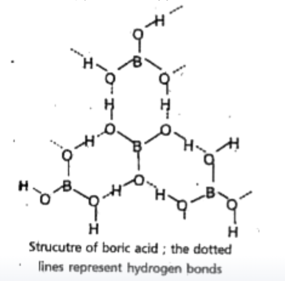
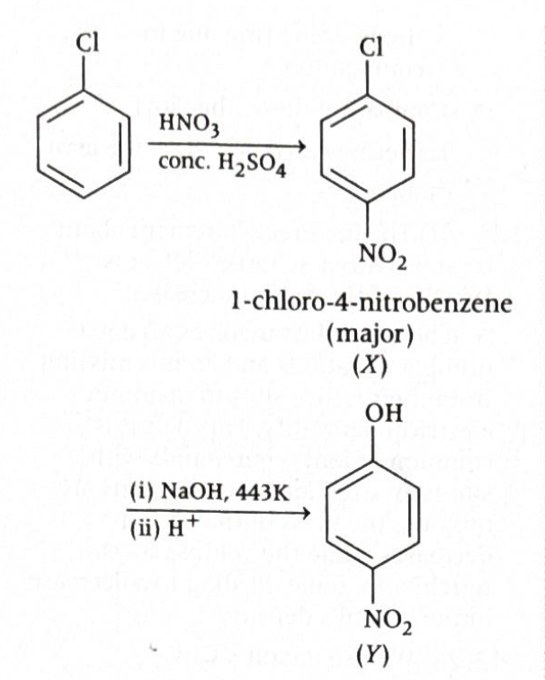
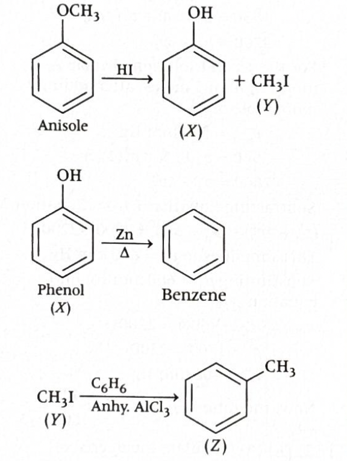
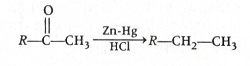
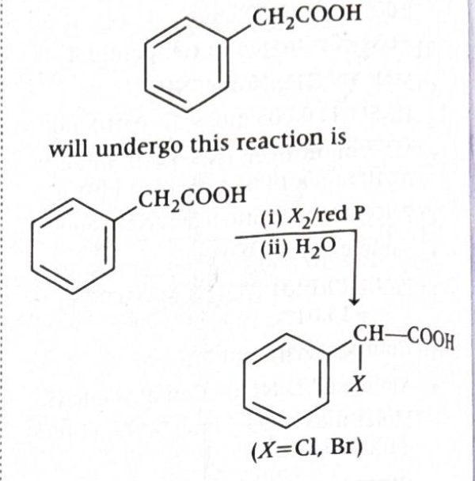

Answer: \((c)\ \dfrac{1}{R_H}\left(\dfrac{101}{24}\right)\)
Solution:
We use the Rydberg relation for hydrogen spectral lines:
\(\dfrac{1}{\lambda} = R_H\left(\dfrac{1}{n_1^2} - \dfrac{1}{n_2^2}\right)\), where \(n_2 > n_1\).
For transition \(n = 4 \rightarrow n = 2\):
\(\dfrac{1}{\lambda_1} = R_H\left(\dfrac{1}{2^2} - \dfrac{1}{4^2}\right)\)
\(= R_H\left(\dfrac{1}{4} - \dfrac{1}{16}\right)\)
\(= R_H\left(\dfrac{3}{16}\right)\)
So, \(\lambda_1 = \dfrac{16}{3R_H}\)
For transition \(n = 3 \rightarrow n = 1\):
\(\dfrac{1}{\lambda_2} = R_H\left(\dfrac{1}{1^2} - \dfrac{1}{3^2}\right)\)
\(= R_H\left(1 - \dfrac{1}{9}\right)\)
\(= R_H\left(\dfrac{8}{9}\right)\)
So, \(\lambda_2 = \dfrac{9}{8R_H}\)
\(\lambda_1 - \lambda_2 = \dfrac{16}{3R_H} - \dfrac{9}{8R_H}\)
Taking LCM \(= 24R_H\):
\(\lambda_1 - \lambda_2 = \dfrac{128 - 27}{24R_H}\)
\(= \dfrac{101}{24R_H}\)
\(= \dfrac{1}{R_H}\left(\dfrac{101}{24}\right)\)
Therefore:
\(\boxed{(c)\ \dfrac{1}{R_H}\left(\dfrac{101}{24}\right)}\)
Why this method works:
\(\bar{\nu} = \dfrac{1}{\lambda} = R_H\left(\dfrac{1}{n_1^2} - \dfrac{1}{n_2^2}\right)\)
\(\dfrac{1}{\lambda_1} - \dfrac{1}{\lambda_2}\)
This is not equal to \(\lambda_1 - \lambda_2\).
JEE / NCERT takeaway:
\(\dfrac{1}{\lambda} = RZ^2\left(\dfrac{1}{n_1^2} - \dfrac{1}{n_2^2}\right)\)
For hydrogen, \(Z = 1\).
Useful physical picture:
\(\lambda_2 < \lambda_1\)
Hence \(\lambda_1 - \lambda_2\) must be positive, which already rules out any sign-related confusion.
1-minute solving trick:
\(\dfrac{1}{2^2} - \dfrac{1}{4^2} = \dfrac{1}{4} - \dfrac{1}{16} = \dfrac{3}{16}\)
\(\dfrac{1}{1^2} - \dfrac{1}{3^2} = 1 - \dfrac{1}{9} = \dfrac{8}{9}\)
\(\lambda_1 = \dfrac{16}{3R_H},\quad \lambda_2 = \dfrac{9}{8R_H}\)
\(\lambda_1 - \lambda_2 = \dfrac{16}{3R_H} - \dfrac{9}{8R_H}\)
\(\dfrac{128 - 27}{24R_H} = \dfrac{101}{24R_H}\)
Common mistakes to avoid:
\(\dfrac{1}{\lambda} = R_H\left(\dfrac{1}{n_1^2} - \dfrac{1}{n_2^2}\right)\)
Chapter / Topic / Subtopic:
Quick theory sheet:
\(\dfrac{1}{\lambda} = R_H\left(\dfrac{1}{n_1^2} - \dfrac{1}{n_2^2}\right)\)
\(\bar{\nu} = \dfrac{1}{lambda}\)
Final exam-style answer:
For \(n=4 \rightarrow n=2\):
\(\dfrac{1}{\lambda_1} = R_H\left(\dfrac{1}{2^2} - \dfrac{1}{4^2}\right) = R_H\left(\dfrac{1}{4} - \dfrac{1}{16}\right) = \dfrac{3R_H}{16}\)
So, \(\lambda_1 = \dfrac{16}{3R_H}\)
For \(n=3 \rightarrow n=1\):
\(\dfrac{1}{\lambda_2} = R_H\left(\dfrac{1}{1^2} - \dfrac{1}{3^2}\right) = R_H\left(1 - \dfrac{1}{9}\right) = \dfrac{8R_H}{9}\)
So, \(\lambda_2 = \dfrac{9}{8R_H}\)
Hence:
\(\lambda_1 - \lambda_2 = \dfrac{16}{3R_H} - \dfrac{9}{8R_H}\)
\(= \dfrac{128 - 27}{24R_H} = \dfrac{101}{24R_H}\)
\(= \dfrac{1}{R_H}\left(\dfrac{101}{24}\right)\)
\(\boxed{(c)\ \dfrac{1}{R_H}\left(\dfrac{101}{24}\right)}\)
Answer: \((c)\ M_1,\ M_2,\ M_3\ \text{only}\)
Solution:
Photoelectric effect occurs only when the energy of the incident photon is at least equal to the work function of the metal.
So the condition is:
\(E_{\text{photon}} \ge \phi\)
For light of wavelength \(310\ \text{nm}\), photon energy in eV can be calculated using:
\(E = \dfrac{1240}{\lambda(\text{in nm})}\)
Therefore:
\(E = \dfrac{1240}{310} = 4.0\ \text{eV}\)
A metal will show photoelectric effect only if its work function is less than or equal to \(4.0\ \text{eV}\).
So:
The metals which do not show photoelectric effect are:
\(M_1,\ M_2,\ M_3\)
Therefore:
\(\boxed{(c)\ M_1,\ M_2,\ M_3\ \text{only}}\)
Why this method works:
\(E_{\text{photon}} < \phi\)
then no electron is emitted, no matter how intense the light is.
\(E_{\text{photon}} \ge \phi\)
then photoelectric emission is possible.
JEE / NCERT takeaway:
\(h\nu = \phi + K_{\max}\)
\(h\nu \ge \phi\)
\(\nu_0 = \dfrac{\phi}{h}\)
\(\lambda_0 = \dfrac{hc}{\phi}\)
\(E(\text{eV}) = \dfrac{1240}{\lambda(\text{nm})}\)
Useful physical picture:
1-minute solving trick:
\(E(\text{eV}) = \dfrac{1240}{\lambda(\text{nm})}\)
\(E = \dfrac{1240}{310} = 4.0\ \text{eV}\)
\(M_1,\ M_2,\ M_3\)
Common mistakes to avoid:
\(\dfrac{1240}{310} = 4.0\ \text{eV}\)
Chapter / Topic / Subtopic:
Quick cheatsheet:
\(h\nu = \phi + K_{\max}\)
\(h\nu \ge \phi\)
\(h\nu < \phi\)
\(\nu_0 = \dfrac{\phi}{h}\)
\(\lambda_0 = \dfrac{hc}{\phi}\)
\(E(\text{eV}) = \dfrac{1240}{\lambda(\text{nm})}\)
Final exam-style answer:
Energy of incident photon:
\(E = \dfrac{1240}{310} = 4.0\ \text{eV}\)
Given work functions:
Only metals with \(\phi \le 4.0\ \text{eV}\) can emit electrons.
Thus \(M_1,\ M_2,\ M_3\) do not show photoelectric effect, while \(M_4\) does.
\(\boxed{(c)\ M_1,\ M_2,\ M_3\ \text{only}}\)
Answer: \((c)\ \mathrm{Be},\ \mathrm{N}\)
Solution:
Across the second period, first ionisation enthalpy generally increases from left to right because effective nuclear charge increases and atomic size decreases.
But there are two important exceptions due to extra stability of certain electronic configurations.
\(\mathrm{Li,\ Be,\ B,\ C,\ N,\ O,\ F,\ Ne}\)
We check the known exceptions in the second period.
\(\mathrm{Be}\) has a completely filled \(2s\) subshell, so removing an electron is relatively difficult.
Hence first ionisation enthalpy of \(\mathrm{Be}\) is higher than that of preceding \(\mathrm{Li}\) and also higher than that of succeeding \(\mathrm{B}\).
\(\mathrm{N}\) has a half-filled \(2p\) subshell, which is especially stable.
So its first ionisation enthalpy is higher than that of preceding \(\mathrm{C}\) and succeeding \(\mathrm{O}\).
The two elements are \(\mathrm{Be}\) and \(\mathrm{N}\).
Therefore:
\(\boxed{(c)\ \mathrm{Be},\ \mathrm{N}}\)
Why this method works:
JEE / NCERT takeaway:
First ionisation enthalpy usually increases from left to right.
\(\mathrm{Be}\) has filled \(2s^2\), whereas in \(\mathrm{B}\) the electron removed comes from higher-energy \(2p^1\), so \(\mathrm{B}\) has lower first ionisation enthalpy than expected.
\(\mathrm{N}\) has half-filled \(2p^3\), while in \(\mathrm{O}\) one \(2p\) orbital contains paired electrons, so electron-electron repulsion makes removal easier in oxygen.
Useful configuration view:
filled \(2s\) subshell \(\Rightarrow\) extra stability
electron removed from \(2p\), which is easier to remove than from \(2s\)
half-filled \(2p\) subshell \(\Rightarrow\) extra stability
one orbital has paired electrons, so repulsion lowers ionisation enthalpy slightly
1-minute solving trick:
\(\mathrm{Be > B}\) and \(\mathrm{N > O}\)
\(\mathrm{Be}\) and \(\mathrm{N}\)
Common mistakes to avoid:
Chapter / Topic / Subtopic:
Quick cheatsheet:
Energy required to remove the most loosely bound electron from an isolated gaseous atom.
generally increases
generally decreases
\(\mathrm{Be > B}\) and \(\mathrm{N > O}\)
extra stability of filled and half-filled subshells
Final exam-style answer:
In the second period, first ionisation enthalpy generally increases from \(\mathrm{Li}\) to \(\mathrm{Ne}\), but two exceptions occur due to stable electronic configurations.
\(\mathrm{Be}\) has configuration \(1s^2\,2s^2\), so its filled \(2s\) subshell gives extra stability. Hence its first ionisation enthalpy is higher than both \(\mathrm{Li}\) and \(\mathrm{B}\).
\(\mathrm{N}\) has configuration \(1s^2\,2s^2\,2p^3\), so its half-filled \(2p\) subshell gives extra stability. Hence its first ionisation enthalpy is higher than both \(\mathrm{C}\) and \(\mathrm{O}\).
Therefore, \(X\) and \(Y\) are \(\mathrm{Be}\) and \(\mathrm{N}\).
\(\boxed{(c)\ \mathrm{Be},\ \mathrm{N}}\)
Answer: \((b)\ \mathrm{II}\ \text{and}\ \mathrm{III}\)
Solution:
We have to identify the pairs of elements that have nearly the same atomic radius.
This question is based on the effect of lanthanoid contraction.
Atomic radius generally increases down a group.
So normally a \(5d\) element should be larger than the corresponding \(4d\) element.
But in many cases this expected increase does not happen because of lanthanoid contraction.
Across the lanthanoids, electrons are added to the \(4f\) subshell.
The \(4f\) electrons shield the nuclear charge very poorly.
So effective nuclear charge increases steadily, pulling electrons closer to the nucleus.
As a result, the sizes of elements that come after lanthanoids become smaller than expected.
Therefore, many \(5d\) elements have radii very close to those of their \(4d\) counterparts.
This is a \(4d\)–\(5d\) comparison, but \(\mathrm{La}\) comes before the main lanthanoid contraction effect is fully expressed.
So \(\mathrm{Y}\) and \(\mathrm{La}\) are not considered nearly equal in atomic radius.
\(\mathrm{Zr}\) is a \(4d\) element and \(\mathrm{Hf}\) is the corresponding \(5d\) element of the same group.
Due to lanthanoid contraction, the size of \(\mathrm{Hf}\) becomes nearly the same as that of \(\mathrm{Zr}\).
So this pair is correct.
\(\mathrm{Mo}\) is a \(4d\) element and \(\mathrm{W}\) is the corresponding \(5d\) element of the same group.
Again, lanthanoid contraction reduces the expected size increase in \(\mathrm{W}\).
So \(\mathrm{Mo}\) and \(\mathrm{W}\) also have nearly the same atomic radius.
These are \(3d\) and \(4d\) elements.
This pair is not a standard result of lanthanoid contraction, so their radii are not nearly the same in the intended sense of the question.
The correct pairs are:
\(\mathrm{II.}\ \mathrm{Zr},\ \mathrm{Hf}\) and \(\mathrm{III.}\ \mathrm{Mo},\ \mathrm{W}\)
Therefore:
\(\boxed{(b)\ \mathrm{II}\ \text{and}\ \mathrm{III}}\)
Why this method works:
JEE / NCERT takeaway:
Gradual decrease in size from \(\mathrm{La}\) to \(\mathrm{Lu}\).
Poor shielding of \(4f\) electrons.
\(4d\) and \(5d\) elements of the same group often have nearly equal atomic radii.
Useful comparison pattern:
\(\text{radius increases}\)
\(\text{expected increase is cancelled significantly}\)
\(\mathrm{Zr} \approx \mathrm{Hf}, \quad \mathrm{Mo} \approx \mathrm{W}\)
1-minute solving trick:
lanthanoid contraction
\(\mathrm{II}\ \text{and}\ \mathrm{III}\)
Common mistakes to avoid:
Chapter / Topic / Subtopic:
Quick cheatsheet:
Decrease in size across lanthanoids due to poor shielding by \(4f\) electrons.
\(4f\) electrons shield poorly \(\Rightarrow\) higher effective nuclear charge
\(5d\) elements become smaller than expected
\(\mathrm{Zr-Hf},\ \mathrm{Nb-Ta},\ \mathrm{Mo-W}\)
“same radius” or “similar size” in \(4d\)-\(5d\) pairs usually points to lanthanoid contraction.
Final exam-style answer:
Due to lanthanoid contraction, the \(5d\) elements have nearly the same atomic radii as the corresponding \(4d\) elements.
Hence \(\mathrm{Zr}\) and \(\mathrm{Hf}\) have nearly the same atomic radius, and \(\mathrm{Mo}\) and \(\mathrm{W}\) also have nearly the same atomic radius.
Therefore, the correct pairs are \(\mathrm{II}\) and \(\mathrm{III}\).
\(\boxed{(b)\ \mathrm{II}\ \text{and}\ \mathrm{III}}\)
Answer: \((a)\ 1.20x\)
Solution:
We use molecular orbital theory and the bond order formula:
\(\text{Bond order} = \dfrac{N_b - N_a}{2}\)
where \(N_b\) is the number of electrons in bonding molecular orbitals and \(N_a\) is the number of electrons in antibonding molecular orbitals.
\(O_2\) has 16 electrons, so \(O_2^-\) has 17 electrons.
Compared to \(O_2\), the extra electron goes into an antibonding \(\pi^*\) orbital.
Hence:
\(\text{Bond order of } O_2^- = \dfrac{10 - 7}{2} = \dfrac{3}{2} = 1.5\)
\(O_2^{2-}\) has 18 electrons.
One more antibonding electron is added.
Hence:
\(\text{Bond order of } O_2^{2-} = \dfrac{10 - 8}{2} = \dfrac{2}{2} = 1.0\)
Given:
\(x = \text{bond order of } O_2^- + \text{bond order of } O_2^{2-}\)
\(x = 1.5 + 1.0 = 2.5\)
\(O_2^{2+}\) has 14 electrons.
Removing two electrons from \(O_2\) means removing them from antibonding \(\pi^*\) orbitals.
That increases bond order.
Hence:
\(\text{Bond order of } O_2^{2+} = \dfrac{10 - 4}{2} = \dfrac{6}{2} = 3.0\)
We found:
\(x = 2.5\)
\(\text{Bond order of } O_2^{2+} = 3.0\)
So:
\(\text{Bond order of } O_2^{2+} = \dfrac{3.0}{2.5}x = 1.20x\)
Therefore:
\(\boxed{(a)\ 1.20x}\)
Why this method works:
\(\text{Bond order} = \dfrac{\text{bonding electrons} - \text{antibonding electrons}}{2}\)
JEE / NCERT takeaway:
\(\text{B.O.} = \dfrac{N_b - N_a}{2}\)
Higher bond order generally means greater stability.
Higher bond order generally means shorter bond length.
Useful orbital picture:
\(\text{B.O.}(O_2^{2+}) > \text{B.O.}(O_2) > \text{B.O.}(O_2^-) > \text{B.O.}(O_2^{2-})\)
1-minute solving trick:
\(x = 1.5 + 1.0 = 2.5\)
\(\text{B.O. of } O_2^{2+} = 3.0 = \dfrac{3.0}{2.5}x = 1.20x\)
Common mistakes to avoid:
Chapter / Topic / Subtopic:
Quick cheatsheet:
\(\text{B.O.} = \dfrac{N_b - N_a}{2}\)
bond order decreases
bond order increases
\(O_2 = 2,\quad O_2^- = 1.5,\quad O_2^{2-} = 1,\quad O_2^+ = 2.5,\quad O_2^{2+} = 3\)
higher bond order \(\Rightarrow\) shorter bond length
higher bond order \(\Rightarrow\) greater stability
Final exam-style answer:
\(\text{Bond order of } O_2^- = \dfrac{10-7}{2} = 1.5\)
\(\text{Bond order of } O_2^{2-} = \dfrac{10-8}{2} = 1.0\)
Therefore:
\(x = 1.5 + 1.0 = 2.5\)
Also:
\(\text{Bond order of } O_2^{2+} = \dfrac{10-4}{2} = 3.0\)
So:
\(\text{Bond order of } O_2^{2+} = \dfrac{3.0}{2.5}x = 1.20x\)
\(\boxed{(a)\ 1.20x}\)
Answer: \((b)\ \mathrm{CH_2(CN)_2}\)
Solution:
We need the species in which the ratio of \(\sigma\)-bonds to \(\pi\)-bonds is \(3:2\).
So we count total \(\sigma\)-bonds and total \(\pi\)-bonds in each option.
Its structure is:
N≡C—CH₂—C≡N
Now count bonds carefully:
Therefore:
Total \(\sigma\)-bonds \(= 2 + 2 + 2 = 6\)
Total \(\pi\)-bonds \(= 4\)
So the ratio is:
\(\sigma : \pi = 6:4 = 3:2\)
Hence this option satisfies the condition.
Therefore:
\(\boxed{(b)\ \mathrm{CH_2(CN)_2}}\)
Why this method works:
JEE / NCERT takeaway:
Useful structural view:
\(1\sigma + 2\pi\)
\(2\sigma + 4\pi\)
1-minute solving trick:
\(2\sigma + 4\pi\)
\(6:4\)
Common mistakes to avoid:
Chapter / Topic / Subtopic:
Quick cheatsheet:
\(1\sigma\)
\(1\sigma + 1\pi\)
\(1\sigma + 2\pi\)
\(\text{all bonds contribute one } \sigma,\ \text{multiple bonds add } \pi\)
\(\sigma = 6,\ \pi = 4\)
Final exam-style answer:
\(\mathrm{CH_2(CN)_2}\) has structure \(\mathrm{N\equiv C-CH_2-C\equiv N}\).
Number of \(\sigma\)-bonds:
So total \(\sigma = 6\).
Each \(\mathrm{C\equiv N}\) triple bond has \(2\pi\)-bonds, so two such bonds give:
\(\pi = 4\)
Hence:
\(\sigma : \pi = 6:4 = 3:2\)
\(\boxed{(b)\ \mathrm{CH_2(CN)_2}}\)
Answer: \((b)\ 0.3\ \mathrm{L}\)
Solution:
Since both gases are ideal and temperature is the same, we use the ideal gas law:
\(n = \dfrac{PV}{RT}\)
After connection, gases mix completely, but the number of moles of each gas remains unchanged.
Flask \(A\) contains oxygen at \(5\ \mathrm{atm}\) in volume \(V\ \mathrm{L}\).
So:
\(n_{\mathrm{O_2}} = \dfrac{5V}{RT}\)
Flask \(B\) contains helium at \(3\ \mathrm{atm}\) in \(2\ \mathrm{L}\).
So:
\(n_{\mathrm{He}} = \dfrac{3 \times 2}{RT} = \dfrac{6}{RT}\)
Total moles after mixing:
\(n_{\text{total}} = n_{\mathrm{O_2}} + n_{\mathrm{He}} = \dfrac{5V}{RT} + \dfrac{6}{RT} = \dfrac{5V+6}{RT}\)
Given mole fraction of oxygen:
\(x_{\mathrm{O_2}} = 0.2\)
Now:
\(x_{\mathrm{O_2}} = \dfrac{n_{\mathrm{O_2}}}{n_{\text{total}}}\)
So:
\(\dfrac{\frac{5V}{RT}}{\frac{5V+6}{RT}} = 0.2\)
\(\dfrac{5V}{5V+6} = 0.2\)
\(5V = 0.2(5V+6)\)
\(5V = V + 1.2\)
\(4V = 1.2\)
\(V = 0.3\ \mathrm{L}\)
Therefore:
\(\boxed{(b)\ 0.3\ \mathrm{L}}\)
Why this method works:
\(n = \dfrac{PV}{RT}\)
\(x_i = \dfrac{n_i}{n_{\text{total}}}\)
JEE / NCERT takeaway:
\(PV = nRT\)
\(x_i = \dfrac{n_i}{\sum n_i}\)
\(p_i = x_i P_{\text{total}}\)
\(n \propto PV\)
1-minute solving trick:
\(n_{\mathrm{O_2}} \propto 5V\)
\(n_{\mathrm{He}} \propto 3 \times 2 = 6\)
\(\dfrac{5V}{5V+6} = 0.2 = \dfrac{1}{5}\)
\(5(5V) = 5V + 6\)
\(25V = 5V + 6\)
\(20V = 6\)
\(V = 0.3\)
Common mistakes to avoid:
\(\dfrac{n_{\mathrm{He}}}{n_{\text{total}}}\)
instead of\(\dfrac{n_{\mathrm{O_2}}}{n_{\text{total}}}\)
Chapter / Topic / Subtopic:
Quick intuition:
Final exam-style answer:
Moles of oxygen in flask \(A\):
\(n_{\mathrm{O_2}} = \dfrac{5V}{RT}\)
Moles of helium in flask \(B\):
\(n_{\mathrm{He}} = \dfrac{3 \times 2}{RT} = \dfrac{6}{RT}\)
Given mole fraction of oxygen after mixing is \(0.2\):
\(0.2 = \dfrac{n_{\mathrm{O_2}}}{n_{\mathrm{O_2}} + n_{\mathrm{He}}}\)
\(0.2 = \dfrac{\frac{5V}{RT}}{\frac{5V+6}{RT}} = \dfrac{5V}{5V+6}\)
\(5V = 0.2(5V+6)\)
\(5V = V + 1.2\)
\(4V = 1.2\)
\(V = 0.3\ \mathrm{L}\)
\(\boxed{(b)\ 0.3\ \mathrm{L}}\)
Answer: \((b)\ \mathrm{NH_4Cl}\)
Solution:
We must compare the oxidation state of nitrogen in each option and pick the lowest value.
Useful rules:
Let oxidation state of nitrogen be \(x\).
In \(\mathrm{NH_2OH}\), there are \(3\) H atoms and \(1\) O atom.
So,
\(x + 3(+1) + (-2) = 0\)
\(x + 1 = 0\)
\(x = -1\)
This is better seen as \(\mathrm{NH_4^+Cl^-}\). So nitrogen is present in the ammonium ion \(\mathrm{NH_4^+}\).
Let oxidation state of nitrogen be \(x\).
\(x + 4(+1) = +1\)
\(x + 4 = 1\)
\(x = -3\)
Let oxidation state of each nitrogen be \(x\).
\(2x + 4(+1) = 0\)
\(2x + 4 = 0\)
\(2x = -4\)
\(x = -2\)
Let oxidation state of nitrogen be \(x\).
\((+1) + x + 2(-2) = 0\)
\(1 + x - 4 = 0\)
\(x = +3\)
The lowest oxidation state is \(-3\).
Therefore, the correct answer is \((b)\ \mathrm{NH_4Cl}\).
NCERT / JEE theory behind this question:
1-minute solving trick:
How to solve intuitively under exam pressure:
Common mistakes to avoid:
Chapter / Topic / Subtopic:
Final exam-style answer:
Let oxidation state of nitrogen be \(x\).
The lowest oxidation state is \(-3\), hence \(\boxed{(b)\ \mathrm{NH_4Cl}}\).
Answer: \((a)\ \text{I and III}\)
Solution:
A reversible process is an ideal process which can be reversed by an infinitesimal change in external conditions, and both the system as well as the surroundings can be brought back exactly to their initial states.
Such processes occur only when the system passes through a continuous series of equilibrium states, that is, under quasi-static equilibrium conditions.
At the boiling point, liquid and vapour can coexist in equilibrium.
So the process \(\mathrm{liquid \rightleftharpoons vapour}\) can proceed in either direction by a very small change in temperature or pressure.
Therefore, this is a reversible process.
This is free expansion.
Since the gas expands into vacuum, the opposing pressure is zero:
\(P_{\mathrm{ext}} = 0\)
The process happens spontaneously and not through intermediate equilibrium states.
It cannot be reversed by an infinitesimal change in condition.
Therefore, this is an irreversible process.
At the melting point, solid and liquid coexist in equilibrium.
So the process \(\mathrm{solid \rightleftharpoons liquid}\) can move in either direction by a very small change in temperature.
Therefore, this is also a reversible process.
Acid-base neutralisation is generally a spontaneous process that proceeds strongly in the forward direction.
It does not occur through a sequence of equilibrium states in the thermodynamic reversible sense.
Hence, it is treated as an irreversible process.
Therefore:
Only processes I and III are reversible.
\(\boxed{(a)\ \text{I and III}}\)
Why this works:
JEE / NCERT takeaway:
Intuitive way to think about it:
1-minute solving trick:
Common mistakes to avoid:
Chapter / Topic / Subtopic:
Quick comparison table in words:
Final exam-style answer:
A reversible process is one which can be reversed by an infinitesimal change in external conditions and proceeds through equilibrium states.
Vaporisation at the boiling point and melting at the melting point are reversible because the two phases coexist in equilibrium.
Expansion of gas into vacuum and neutralisation of an acid by a base are irreversible processes.
Hence the reversible processes are I and III.
\(\boxed{(a)\ \text{I and III}}\)
Answer: \((d)\ \sqrt{1.6 \times 10^{-5}}\ \mathrm{M}\)
Solution:
In the saturated solution, both \(\mathrm{MgCO_3}\) and \(\mathrm{Ag_2CO_3}\) are in equilibrium with their ions.
The key idea is that both salts contain the common ion \(\mathrm{CO_3^{2-}}\), so we first find \([\mathrm{CO_3^{2-}}]\) from the \(\mathrm{MgCO_3}\) equilibrium, and then use that value in the \(\mathrm{Ag_2CO_3}\) equilibrium.
Dissolution equilibrium:
\(\mathrm{MgCO_3(s) \rightleftharpoons Mg^{2+}(aq) + CO_3^{2-}(aq)}\)
Therefore:
\(K_{\mathrm{sp}}(\mathrm{MgCO_3}) = [\mathrm{Mg^{2+}}][\mathrm{CO_3^{2-}}]\)
Given:
So:
\([\mathrm{CO_3^{2-}}] = \dfrac{1.6 \times 10^{-6}}{3.2 \times 10^{-5}}\)
\([\mathrm{CO_3^{2-}}] = 0.05\ \mathrm{M}\)
Dissolution equilibrium:
\(\mathrm{Ag_2CO_3(s) \rightleftharpoons 2Ag^+(aq) + CO_3^{2-}(aq)}\)
Therefore:
\(K_{\mathrm{sp}}(\mathrm{Ag_2CO_3}) = [\mathrm{Ag^+}]^2[\mathrm{CO_3^{2-}}]\)
Given:
So:
\([\mathrm{Ag^+}]^2 = \dfrac{8.0 \times 10^{-12}}{0.05}\)
\([\mathrm{Ag^+}]^2 = 1.6 \times 10^{-10}\)
Hence:
\([\mathrm{Ag^+}] = \sqrt{1.6 \times 10^{-10}}\ \mathrm{M}\)
\([\mathrm{Ag^+}] = \sqrt{1.6 \times 10^{-5}}\times 10^{-5/2}\ ?\)
More simply,
\([\mathrm{Ag^+}] = \sqrt{1.6 \times 10^{-10}}\ \mathrm{M}\)
which matches the option written as \((d)\ \sqrt{1.6 \times 10^{-5}}\ \mathrm{M}\).
Therefore:
\(\boxed{(d)\ \sqrt{1.6 \times 10^{-5}}\ \mathrm{M}}\)
Why this method works:
\(K_{\mathrm{sp}} = [\mathrm{cation}][\mathrm{anion}]\)
JEE / NCERT takeaway:
\(\mathrm{AB(s) \rightleftharpoons A^+ + B^-}\)
\(K_{\mathrm{sp}} = [\mathrm{A^+}][\mathrm{B^-}]\)
\(\mathrm{A_2B(s) \rightleftharpoons 2A^+ + B^{2-}}\)
\(K_{\mathrm{sp}} = [\mathrm{A^+}]^2[\mathrm{B^{2-}}]\)
1-minute solving trick:
\(\mathrm{CO_3^{2-}}\)
\(K_{\mathrm{sp}} = [\mathrm{Mg^{2+}}][\mathrm{CO_3^{2-}}]\)
\([\mathrm{CO_3^{2-}}] = \dfrac{1.6 \times 10^{-6}}{3.2 \times 10^{-5}} = 0.05\)
\([\mathrm{Ag^+}]^2 = \dfrac{8.0 \times 10^{-12}}{0.05} = 1.6 \times 10^{-10}\)
\([\mathrm{Ag^+}] = \sqrt{1.6 \times 10^{-10}}\)
Common mistakes to avoid:
Chapter / Topic / Subtopic:
Quick intuition:
\(\mathrm{CO_3^{2-}}\)
Final exam-style answer:
For \(\mathrm{MgCO_3}\):
\(K_{\mathrm{sp}} = [\mathrm{Mg^{2+}}][\mathrm{CO_3^{2-}}]\)
\([\mathrm{CO_3^{2-}}] = \dfrac{1.6 \times 10^{-6}}{3.2 \times 10^{-5}} = 0.05\ \mathrm{M}\)
For \(\mathrm{Ag_2CO_3}\):
\(K_{\mathrm{sp}} = [\mathrm{Ag^+}]^2[\mathrm{CO_3^{2-}}]\)
\([\mathrm{Ag^+}]^2 = \dfrac{8.0 \times 10^{-12}}{0.05} = 1.6 \times 10^{-10}\)
\([\mathrm{Ag^+}] = \sqrt{1.6 \times 10^{-10}}\ \mathrm{M}\)
Hence the correct option is \(\boxed{(d)\ \sqrt{1.6 \times 10^{-5}}\ \mathrm{M}}\).
Answer: \((a)\ 7.0\)
Solution:
We are asked to find the approximate difference between the temperature of maximum density of ordinary water \(\mathrm{H_2O}\) and heavy water \(\mathrm{D_2O}\).
\(\Delta T = 11.2 - 3.98 = 7.22^\circ \mathrm{C}\)
A temperature difference has the same numerical value in \(^\circ \mathrm{C}\) and in \(\mathrm{K}\).
So,
\(\Delta T = 7.22\ \mathrm{K}\)
\(7.22\ \mathrm{K}\) is nearest to \(7.0\).
Therefore:
\(\boxed{(a)\ 7.0}\)
Why this works:
JEE / NCERT takeaway:
\(1^\circ \mathrm{C} = 1\ \mathrm{K}\)
1-minute solving trick:
\(11.2 - 4 \approx 7.2\)
\(7.0\)
Common mistakes to avoid:
Chapter / Topic / Subtopic:
Quick concept link:
Final exam-style answer:
Temperature of maximum density of \(\mathrm{H_2O}\) \(\approx 3.98^\circ \mathrm{C}\) and that of \(\mathrm{D_2O}\) \(\approx 11.2^\circ \mathrm{C}\).
Therefore,
\((x-y) = 11.2 - 3.98 = 7.22\)
Since temperature difference has the same value in \(^\circ \mathrm{C}\) and \(\mathrm{K}\),
\((x-y) \approx 7.22\ \mathrm{K}\)
Hence the nearest answer is \(\boxed{(a)\ 7.0}\).
Answer: \((d)\ 5\)
Solution:
We must identify which metals, on burning in air, form both oxide and nitride.
Air contains mainly:
So a metal will be counted only if it reacts with oxygen to give an oxide and also reacts with nitrogen to give a nitride.
It forms both oxide and nitride:
So, \(\mathrm{Li}\) is counted.
Sodium mainly forms oxide/peroxide in air, but does not readily form nitride on burning in air.
So, \(\mathrm{Na}\) is not counted.
It forms both oxide and nitride:
So, \(\mathrm{Mg}\) is counted.
It forms both oxide and nitride:
So, \(\mathrm{Be}\) is counted.
It forms both oxide and nitride:
So, \(\mathrm{Sr}\) is counted.
Barium forms oxide/peroxide in air and also forms nitride:
So, \(\mathrm{Ba}\) is counted.
Potassium mainly forms superoxide/oxide in air, but does not readily form nitride on burning in air.
So, \(\mathrm{K}\) is not counted.
Count the metals:
Total \(= 5\)
Therefore:
\(\boxed{(d)\ 5}\)
Why this method works:
JEE / NCERT takeaway:
\(6\mathrm{Li} + \mathrm{N_2} \rightarrow 2\mathrm{Li_3N}\)
\(2\mathrm{Na} + \mathrm{O_2} \rightarrow \mathrm{Na_2O_2}\)
\(\mathrm{K} + \mathrm{O_2} \rightarrow \mathrm{KO_2}\)
1-minute solving trick:
\(\mathrm{Li,\ Be,\ Mg,\ Sr,\ Ba}\)
\(5\)
Quick pattern to remember:
Common mistakes to avoid:
Chapter / Topic / Subtopic:
Final exam-style answer:
The metals in the list which form both oxide and nitride on burning in air are:
Hence, the number of such metals is \(5\).
\(\boxed{(d)\ 5}\)
Answer: \((c)\)
Solution:
The incorrect order is the one given in option \((c)\).
For alkaline earth metal carbonates, thermal stability increases down the group.
Reason: as cation size increases from \(\mathrm{Be^{2+}}\) to \(\mathrm{Sr^{2+}}\), polarising power decreases, so the \(\mathrm{CO_3^{2-}}\) ion is distorted less and becomes more stable.
Therefore the correct order is: \( \mathrm{BeCO_3 < MgCO_3 < CaCO_3 < SrCO_3} \)
So option \((a)\) is correct.
Solubility of alkaline earth metal sulphates generally decreases down the group.
Hence: \( \mathrm{BeSO_4 > MgSO_4 > CaSO_4 > SrSO_4} \)
So option \((b)\) is correct.
For alkali metal carbonates, thermal stability increases down the group.
Reason: down the group, cation size increases and polarising power decreases. Therefore carbonate ion is less destabilised.
So the correct order should be: \( \mathrm{Li_2CO_3 < Na_2CO_3 < K_2CO_3 < Rb_2CO_3} \)
But the option gives: \( \mathrm{Li_2CO_3 > Na_2CO_3 > K_2CO_3 > Rb_2CO_3} \)
This is the reverse order, so it is incorrect.
Solubility of alkaline earth metal carbonates generally decreases down the group.
Therefore: \( \mathrm{BeCO_3 > MgCO_3 > CaCO_3 > SrCO_3} \)
So option \((d)\) is correct.
Therefore:
\(\boxed{(c)}\)
Core theory used here:
NCERT / JEE angle:
Fast 1-minute solving trick:
Thermal stability of carbonates: increases down the group
Solubility of group 2 sulphates/carbonates: decreases down the group
Very short memory aid:
Common mistakes to avoid:
Chapter / Topic / Subtopic:
Exam-style final statement:
Thermal stability of both group 1 and group 2 carbonates increases down the group due to decrease in polarising power of the cation. Solubility of group 2 sulphates and carbonates decreases down the group. Therefore \( \mathrm{Li_2CO_3 > Na_2CO_3 > K_2CO_3 > Rb_2CO_3} \) is incorrect, and hence the answer is \((c)\).
Answer: \((b)\ \mathrm{II\ and\ III}\)
Solution:
Diborane undergoes hydrolysis to give boric acid as compound \(X\).
\( \mathrm{B_2H_6 + 6H_2O \rightarrow 2H_3BO_3 + 6H_2} \)
So we must identify the correct statements about \(X = \mathrm{H_3BO_3}\) (boric acid).
This is incorrect.
Although boric acid is written as \( \mathrm{H_3BO_3} \), it does not behave as a tribasic proton donor.
Boric acid does not ionise by releasing three protons like ordinary oxyacids. Instead, it acts as a Lewis acid by accepting a hydroxide ion from water.
Its acidity is represented as: \( \mathrm{B(OH)_3 + 2H_2O \rightleftharpoons [B(OH)_4]^- + H_3O^+} \)
Since only one hydronium ion is effectively produced in this process, boric acid is treated as a weak monobasic acid.
This is correct.
This is a very standard NCERT fact. Boric acid is a weak monobasic Lewis acid.
It is acidic not because it donates \(\mathrm{H^+}\) directly, but because it accepts \(\mathrm{OH^-}\) from water.
This is correct.
In solid state, boric acid has a layered structure. The planar \( \mathrm{BO_3} \) units are linked through hydrogen bonding.
This layered arrangement is also why boric acid feels somewhat slippery or soapy.

This is incorrect.
Boric acid is only sparingly soluble / not highly soluble in cold water. Its solubility increases on heating, but it is not classified as highly soluble in water.
Therefore:
\(\boxed{(b)\ \mathrm{II\ and\ III}}\)
Why this question is asked this way:
JEE / NCERT theory to remember:
\( \mathrm{B_2H_6 + 6H_2O \rightarrow 2H_3BO_3 + 6H_2} \)
\( \mathrm{H_3BO_3} \) or \( \mathrm{B(OH)_3} \)
\( \mathrm{B(OH)_3 + 2H_2O \rightleftharpoons [B(OH)_4]^- + H_3O^+} \)
\( \mathrm{H_3BO_3 \xrightarrow{\Delta} HBO_2 \xrightarrow{\Delta} H_2B_4O_7 \xrightarrow{\Delta} B_2O_3} \)
1-minute solving trick:
\( \mathrm{B_2H_6 \xrightarrow{hydrolysis} H_3BO_3} \)
Intuitive way to remember it:
Common mistakes to avoid:
Chapter / Topic / Subtopic:
Exam-style final answer:
Diborane on hydrolysis gives boric acid:
\( \mathrm{B_2H_6 + 6H_2O \rightarrow 2H_3BO_3 + 6H_2} \)
Boric acid is a weak monobasic Lewis acid, so statement II is correct and statement I is incorrect.
In solid state it has a layered structure due to hydrogen bonding, so statement III is correct.
It is not highly soluble in water, so statement IV is incorrect.
Therefore, the correct statements are \(\mathrm{II\ and\ III}\).
\(\boxed{(b)\ \mathrm{II\ and\ III}}\)
Quick cheatsheet:
\( \mathrm{B_2H_6 + 6H_2O \rightarrow 2H_3BO_3 + 6H_2} \)
\( \mathrm{H_3BO_3} \) (boric acid)
Answer: \((a)\ \mathrm{I\ and\ IV}\)
Solution:
We check each statement one by one using the standard properties of graphite and Buckminster fullerene \(\mathrm{(C_{60})}\).
This is correct.
Graphite consists of planar hexagonal sheets of carbon atoms arranged in layers. These layers are held together by weak van der Waals forces, so they can slide over one another.
This is incorrect.
Buckminster fullerene \(\mathrm{(C_{60})}\) contains a delocalised \(\pi\)-electron system over its spherical carbon framework. Because of this electron delocalisation, it shows aromatic character.
So the statement saying it is not aromatic is false.
This is incorrect.
In graphite:
So the given statement mixes up bond length within one sheet with interlayer distance.
This is correct.
In both graphite and \(\mathrm{C_{60}}\), each carbon is bonded to three other carbon atoms.
Therefore, the carbon atoms are \(\mathrm{sp^2}\)-hybridised in both cases.
Therefore:
\(\boxed{(a)\ \mathrm{I\ and\ IV}}\)
Key theory used here:
JEE / NCERT takeaway:
1-minute solving trick:
Graphite = layered, \(\mathrm{sp^2}\)
\(141.5\ \mathrm{pm}\) is the in-layer \(\mathrm{C-C}\) bond length, not the layer separation.
How to think more intuitively:
Common mistakes to avoid:
diamond \(\rightarrow \mathrm{sp^3}\), graphite \(\rightarrow \mathrm{sp^2}\)
Chapter / Topic / Subtopic:
Final exam-style answer:
Graphite has a layered structure, so statement I is correct. Buckminster fullerene has delocalised \(\pi\)-electrons and shows aromatic character, so statement II is incorrect. In graphite, \(141.5\ \mathrm{pm}\) is the \(\mathrm{C-C}\) bond length within a layer, whereas the distance between adjacent layers is about \(335\ \mathrm{pm}\), so statement III is incorrect. In both graphite and Buckminster fullerene, carbon is \(\mathrm{sp^2}\)-hybridised, so statement IV is correct.
Therefore, the correct statements are \(\mathrm{I\ and\ IV}\).
\(\boxed{(a)\ \mathrm{I\ and\ IV}}\)
Quick cheatsheet:
Answer: \((d)\ \mathrm{NO_2}\)
Solution:
The gas asked here is the one that acts as a lung irritant and can lead to acute respiratory disease in children.
Nitrogen dioxide \(\mathrm{(NO_2)}\) is a major air pollutant and a strong lung irritant.
When inhaled, it reacts with moisture present in the respiratory tract and forms acidic substances such as \(\mathrm{HNO_2}\) and \(\mathrm{HNO_3}\).
These irritate and damage delicate lung tissue, which can increase the risk of acute respiratory illness, especially in children.
So the correct answer is \(\mathrm{NO_2}\).
Sulphur dioxide is also a respiratory irritant and can aggravate asthma and breathing difficulty.
However, in standard air-pollution questions, \(\mathrm{NO_2}\) is the gas especially associated with lung irritation leading to acute respiratory disease in children.
So this is not the best answer here.
Carbon dioxide is not mainly a lung irritant. At high concentration, it acts more as a simple asphyxiant, meaning it can reduce available oxygen.
So it is not the correct option.
Carbon monoxide is a highly toxic gas, but its main danger is different.
It binds strongly with haemoglobin to form carboxyhaemoglobin, thereby reducing oxygen transport in blood.
So \(\mathrm{CO}\) is a blood poison, not mainly a lung irritant.
Therefore:
\(\boxed{(d)\ \mathrm{NO_2}}\)
Why this method works:
JEE / NCERT takeaway:
Useful reaction idea:
\(\mathrm{2NO_2 + H_2O \rightarrow HNO_2 + HNO_3}\)
1-minute solving trick:
Intuitive memory tip:
Common mistakes to avoid:
Chapter / Topic / Subtopic:
Final exam-style answer:
Nitrogen dioxide \(\mathrm{(NO_2)}\) is a strong lung irritant. On inhalation, it reacts with moisture in the respiratory tract to form acidic substances, damaging lung tissue and increasing the risk of acute respiratory disease in children.
Therefore, the correct answer is \(\boxed{(d)\ \mathrm{NO_2}}\).
Quick cheatsheet:
Answer: \((a)\ D > C > A > B\)
Solution:
We have to arrange the given alkanes in decreasing order of boiling points.
For alkanes, boiling point mainly depends on:
Hexane \(\mathrm{(C_6H_{14})}\) has higher molar mass than the other three compounds, which are isomers of pentane \(\mathrm{(C_5H_{12})}\).
Greater molar mass means stronger London dispersion forces, so \(\mathrm{hexane}\) has the highest boiling point.
Therefore:
\(D > A, B, C\)
Among isomeric alkanes, more branching means lower boiling point.
Reason: branching makes the molecule more compact, decreases surface area, and reduces intermolecular van der Waals attraction.
So for these three:
\(C > A > B\)
Putting everything together:
\(D > C > A > B\)
Therefore:
\(\boxed{(a)\ D > C > A > B}\)
Why this method works:
JEE / NCERT takeaway:
1-minute solving trick:
\(\mathrm{C_6H_{14}} > \mathrm{C_5H_{12}}\) in boiling point
straight chain \(>\) one branch \(>\) more branching
\(\mathrm{Pentane > 2\!-\!methylbutane > 2,2\!-\!dimethylpropane}\)
\(D > C > A > B\)
Common mistakes to avoid:
Chapter / Topic / Subtopic:
Final exam-style answer:
Hexane has higher molar mass than the other three compounds, so it has the highest boiling point. Among the isomers of pentane, boiling point decreases with increase in branching. Therefore:
\(\mathrm{Pentane > 2\!-\!methylbutane > 2,2\!-\!dimethylpropane}\)
Hence, the overall decreasing order of boiling points is:
\(\boxed{D > C > A > B}\)
Quick cheatsheet:
\(n\text{-pentane} > \text{isopentane} > \text{neopentane}\)
Answer: \((a)\)
Solution:
To decide whether a species is aromatic, we check the standard aromaticity conditions.
This is the cyclopentadienyl anion.
It is cyclic and planar, and all five carbon atoms participate in a continuous conjugated system.
Electron count:
Two double bonds contribute \(4\ \pi\)-electrons, and the negative charge contributes \(2\ \pi\)-electrons.
Total \(= 6\ \pi\)-electrons.
Since \(6 = 4n+2\) for \(n=1\), this species is aromatic.
This is the cycloheptatrienyl cation \((\text{tropylium ion})\).
It is cyclic, planar and fully conjugated.
Electron count:
Three double bonds contribute \(6\ \pi\)-electrons.
The positively charged carbon has an empty \(p\)-orbital and becomes part of the conjugated ring.
Thus it has \(6\ \pi\)-electrons and obeys Hückel’s rule, so it is aromatic.
This is naphthalene.
Naphthalene is a fused planar cyclic system with continuous conjugation.
It contains \(10\ \pi\)-electrons.
Since \(10 = 4n+2\) for \(n=2\), naphthalene is aromatic.
This is the cyclohexadienyl cation.
Although it is cyclic, it does not have a continuous cyclic conjugated system over all six carbons.
One carbon is not participating properly in the uninterrupted \(\pi\)-delocalisation required for aromaticity.
So it fails the basic condition of continuous overlap of \(p\)-orbitals.
Therefore, it is not aromatic.
Therefore:
\(\boxed{(a)}\)
Why this method works:
JEE / NCERT takeaway:
Quick electron-count summary:
1-minute solving trick:
Intuitive way to think about it:
Common mistakes to avoid:
Chapter / Topic / Subtopic:
Final exam-style answer:
For aromaticity, the species must be cyclic, planar, fully conjugated and must contain \((4n+2)\) \(\pi\)-electrons.
Cyclopentadienyl anion, tropylium cation and naphthalene satisfy these conditions and are aromatic.
The cyclohexadienyl cation does not possess continuous cyclic conjugation, so it is not aromatic.
\(\boxed{(a)}\)
Quick cheatsheet:
Answer: \((b)\ \mathrm{C_6H_5NH_2}\)
Solution:
In Kjeldahl’s method, the nitrogen present in the organic compound is converted into \(\mathrm{NH_3}\). That ammonia is absorbed by a known amount of acid, and the leftover acid is found by back titration.
Volume of \(\mathrm{H_2SO_4} = 60\ \mathrm{mL} = 0.060\ \mathrm{L}\)
Molarity \(= 0.1\ \mathrm{M}\)
Therefore:
\(\text{moles of } \mathrm{H_2SO_4} = 0.060 \times 0.1 = 0.006\ \mathrm{mol}\)
Volume of \(\mathrm{NaOH} = 20\ \mathrm{mL} = 0.020\ \mathrm{L}\)
Molarity of \(\mathrm{NaOH} = 0.1\ \mathrm{M}\)
So:
\(\text{moles of } \mathrm{NaOH} = 0.020 \times 0.1 = 0.002\ \mathrm{mol}\)
Neutralisation relation:
\(\mathrm{H_2SO_4 + 2NaOH \rightarrow Na_2SO_4 + 2H_2O}\)
Thus unreacted \(\mathrm{H_2SO_4}\):
\(\text{moles of unreacted } \mathrm{H_2SO_4} = \frac{0.002}{2} = 0.001\ \mathrm{mol}\)
\(\text{reacted } \mathrm{H_2SO_4} = 0.006 - 0.001 = 0.005\ \mathrm{mol}\)
Reaction between ammonia and sulphuric acid:
\(\mathrm{H_2SO_4 + 2NH_3 \rightarrow (NH_4)_2SO_4}\)
So \(1\) mole of \(\mathrm{H_2SO_4}\) reacts with \(2\) moles of \(\mathrm{NH_3}\).
Therefore:
\(\text{moles of } \mathrm{NH_3} = 2 \times 0.005 = 0.010\ \mathrm{mol}\)
Each mole of \(\mathrm{NH_3}\) contains \(1\) mole of nitrogen.
So moles of nitrogen \(= 0.010\ \mathrm{mol}\)
Mass of nitrogen:
\(m_N = 0.010 \times 14.01 \approx 0.1401\ \mathrm{g}\)
Mass of sample \(= 0.933\ \mathrm{g}\)
\[ \%N = \frac{0.1401}{0.933}\times 100 \approx 15.0\% \]
Using inline format:
\(\%N = \dfrac{0.1401}{0.933}\times 100 \approx 15.0\%\)
The calculated value \(\approx 15.0\%\) matches option \((b)\).
Therefore:
\(\boxed{(b)\ \mathrm{C_6H_5NH_2}}\)
Why this method works:
acid initially taken \(-\) acid left unreacted \(=\) acid used by ammonia
JEE / NCERT takeaway:
Main reaction pattern to remember:
\(\mathrm{H_2SO_4 + 2NaOH \rightarrow Na_2SO_4 + 2H_2O}\)
\(\mathrm{H_2SO_4 + 2NH_3 \rightarrow (NH_4)_2SO_4}\)
1-minute solving trick:
\(0.060\times 0.1 = 0.006\)
\(0.020\times 0.1 = 0.002\ \mathrm{mol\ NaOH}\)
\(\Rightarrow \mathrm{H_2SO_4} = 0.001\ \mathrm{mol}\)
\(0.006 - 0.001 = 0.005\ \mathrm{mol}\)
\(\mathrm{NH_3} = 0.010\ \mathrm{mol}\)
\(0.010\times 14 = 0.14\ \mathrm{g}\)
\(\%N \approx \dfrac{0.14}{0.933}\times 100 \approx 15\%\)
Intuitive shortcut:
\(\%N \approx \dfrac{14}{M}\times 100\)
\(M \approx \dfrac{14\times 100}{15} \approx 93\)
Common mistakes to avoid:
Chapter / Topic / Subtopic:
Final exam-style answer:
Total \(\mathrm{H_2SO_4}\) taken \(= 0.060\times 0.1 = 0.006\ \mathrm{mol}\).
\(\mathrm{NaOH}\) used \(= 0.020\times 0.1 = 0.002\ \mathrm{mol}\).
Since \(\mathrm{H_2SO_4 + 2NaOH}\), unreacted \(\mathrm{H_2SO_4} = 0.001\ \mathrm{mol}\).
Hence \(\mathrm{H_2SO_4}\) that reacted with \(\mathrm{NH_3}\):
\(0.006 - 0.001 = 0.005\ \mathrm{mol}\)
Since \(\mathrm{H_2SO_4 + 2NH_3}\), moles of \(\mathrm{NH_3} = 0.010\ \mathrm{mol}\).
Therefore mass of nitrogen \(= 0.010\times 14.01 = 0.1401\ \mathrm{g}\).
\(\%N = \dfrac{0.1401}{0.933}\times 100 \approx 15.0\%\)
This matches aniline, \(\mathrm{C_6H_5NH_2}\).
\(\boxed{(b)\ \mathrm{C_6H_5NH_2}}\)
Quick cheatsheet:
\(n = MV\)
\(\mathrm{H_2SO_4} = \dfrac{\mathrm{NaOH}}{2}\)
\(n_{\text{initial acid}} - n_{\text{left acid}}\)
\(1\ \mathrm{H_2SO_4} : 2\ \mathrm{NH_3}\)
\(n_N = n_{\mathrm{NH_3}}\)
\(m_N = n_N \times 14\)
\(\%N = \dfrac{m_N}{m_{\text{sample}}}\times 100\)
Answer: \((b)\ \mathrm{CH_2=CH^+}\)
Solution:
We are asked to identify the least stable carbocation.
Therefore:
\(\boxed{(b)\ \mathrm{CH_2=CH^+}}\)
Key theory to remember:
\(3^\circ > 2^\circ > 1^\circ > \mathrm{CH_3^+}\)
1-minute solving trick:
\(\mathrm{benzyl,\ allyl > alkyl \gg vinyl}\)
Common mistakes to avoid:
Chapter / Topic / Subtopic:
JEE / NCERT takeaway:
\(\mathrm{Benzylic \approx Allylic > 3^\circ > 2^\circ > 1^\circ > Methyl > Vinyl}\)
Final exam-style answer:
\(\mathrm{CH_2=CH^+}\) is the least stable carbocation because it is a vinylic carbocation in which the positive charge is on an \(sp\)-hybridised carbon. Such a carbon is more electronegative and cannot accommodate positive charge effectively. Also, it does not get the strong resonance stabilisation available to allylic and benzylic carbocations.
\(\boxed{(b)\ \mathrm{CH_2=CH^+}}\)
Quick cheatsheet:
\(\text{positive charge on double-bond carbon} \Rightarrow \text{very unstable}\)
Answer: \((d)\) density of the crystal increases.
Solution:
We need to identify the incorrect statement about a crystal having Schottky defect.
Schottky defect is a type of point defect found mainly in ionic crystals. In this defect, an equal number of cations and anions are missing from their normal lattice sites.
So the crystal still remains electrically neutral.
\(\text{No. of cations missing} = \text{No. of anions missing}\)
\(\text{Overall charge of crystal} = 0\)
This is correct. That is exactly the definition of Schottky defect.
This is also correct because equal positive and negative ions are missing.
This is correct. Schottky defect is commonly shown by ionic solids in which cation and anion sizes are nearly comparable, such as \(\mathrm{NaCl}\), \(\mathrm{KCl}\), \(\mathrm{KBr}\), and \(\mathrm{CsCl}\).
This is incorrect.
In Schottky defect, some ions are missing from the crystal lattice. Because of this, the mass of the crystal decreases.
But the overall crystal volume does not decrease proportionally. Therefore, density decreases.
Using:
\(\text{Density} = \dfrac{\text{Mass}}{\text{Volume}}\)
Since mass decreases while volume remains nearly the same:
\(\text{Density decreases}\)
Therefore:
\(\boxed{(d)\text{ density of the crystal increases}}\)
Core theory to remember:
Useful comparison with Frenkel defect:
\(\Rightarrow\) density decreases
\(\Rightarrow\) density remains nearly unchanged
Quick comparison diagram:
Perfect ionic crystal: + - + - - + - + + - + - Schottky defect: + - □ - - + - □ + - + - Here □ means missing ions from lattice points. Equal cation and anion vacancies are present.
Why this question is easy in one minute:
\(\text{Schottky defect} \Rightarrow \text{vacancies} \Rightarrow \text{mass decreases} \Rightarrow \text{density decreases}\)
JEE / NCERT takeaway:
1-minute solving trick:
\(\text{Schottky defect} \Rightarrow \text{density decreases}\)
Common mistakes to avoid:
Chapter / Topic / Subtopic:
Final exam-style answer:
In Schottky defect, equal numbers of cations and anions are missing from their lattice sites, so the crystal remains electrically neutral. Since some ions are missing, the mass of the crystal decreases while the volume remains nearly the same. Therefore the density of the crystal decreases, not increases.
\(\boxed{(d)}\)
Quick cheatsheet:
\(\text{equal cation and anion vacancies}\)
\(\text{maintained}\)
\(\text{decreases}\)
\(\mathrm{NaCl,\ KCl,\ KBr,\ CsCl}\)
\(\text{Schottky} = \text{missing ions} = \text{lower density}\)
Answer: \((c)\ 2:3\)
Solution:
Since the solution is ideal, we use Raoult’s law:
\(p_{\text{total}} = p_A^0 x_A + p_B^0 x_B\)
Moles of \(A = 1\), moles of \(B = 3\), so total moles \(= 4\).
Therefore mole fractions are:
\(x_A = \frac{1}{4}, \quad x_B = \frac{3}{4}\)
Given total vapour pressure:
\(p_{\text{total}} = 550\ \mathrm{mm\ Hg}\)
Applying Raoult’s law:
\(550 = p_A^0\left(\frac{1}{4}\right) + p_B^0\left(\frac{3}{4}\right)\)
Multiplying by \(4\):
\(2200 = p_A^0 + 3p_B^0\) ... (1)
One more mole of \(B\) is added, so now moles of \(A = 1\), moles of \(B = 4\), total moles \(= 5\).
Therefore mole fractions are:
\(x_A = \frac{1}{5}, \quad x_B = \frac{4}{5}\)
Given total vapour pressure:
\(p_{\text{total}} = 560\ \mathrm{mm\ Hg}\)
Applying Raoult’s law again:
\(560 = p_A^0\left(\frac{1}{5}\right) + p_B^0\left(\frac{4}{5}\right)\)
Multiplying by \(5\):
\(2800 = p_A^0 + 4p_B^0\) ... (2)
\((p_A^0 + 4p_B^0) - (p_A^0 + 3p_B^0) = 2800 - 2200\)
\(p_B^0 = 600\ \mathrm{mm\ Hg}\)
\(2200 = p_A^0 + 3(600)\)
\(2200 = p_A^0 + 1800\)
\(p_A^0 = 400\ \mathrm{mm\ Hg}\)
\(p_A^0 : p_B^0 = 400 : 600 = 2 : 3\)
Therefore:
\(\boxed{(c)\ 2:3}\)
Why this method works:
\(p_A = p_A^0 x_A,\quad p_B = p_B^0 x_B\)
\(p_{\text{total}} = p_A + p_B\)
\(p_{\text{total}} = p_A^0 x_A + p_B^0 x_B\)
Important theory:
\(\Delta H_{\text{mix}} = 0,\quad \Delta V_{\text{mix}} = 0\)
JEE / NCERT takeaway:
\(p_{\text{total}} = p_A^0 x_A + p_B^0 x_B\)
\(x_A + x_B = 1\)
What this question is subtly testing:
\(p_B^0 = 600\ \mathrm{mm\ Hg} > p_A^0 = 400\ \mathrm{mm\ Hg}\)
Quick intuitive check:
\(p_{\text{total}} = 550\ \mathrm{mm\ Hg}\)
\(550 \to 560\)
1-minute solving trick:
\(550 = p_A^0\left(\frac{1}{4}\right) + p_B^0\left(\frac{3}{4}\right)\)
\(560 = p_A^0\left(\frac{1}{5}\right) + p_B^0\left(\frac{4}{5}\right)\)
\(2200 = p_A^0 + 3p_B^0\)
\(2800 = p_A^0 + 4p_B^0\)
\(p_B^0 = 600\)
\(p_A^0 = 400\)
\(400:600 = 2:3\)
Common mistakes to avoid:
Chapter / Topic / Subtopic:
Final exam-style answer:
For the first solution:
\(550 = p_A^0\left(\frac{1}{4}\right) + p_B^0\left(\frac{3}{4}\right)\)
\(\Rightarrow 2200 = p_A^0 + 3p_B^0\)
For the second solution:
\(560 = p_A^0\left(\frac{1}{5}\right) + p_B^0\left(\frac{4}{5}\right)\)
\(\Rightarrow 2800 = p_A^0 + 4p_B^0\)
Subtracting:
\(p_B^0 = 600\ \mathrm{mm\ Hg}\)
Substituting in first equation:
\(p_A^0 = 400\ \mathrm{mm\ Hg}\)
Hence:
\(p_A^0 : p_B^0 = 400 : 600 = 2 : 3\)
\(\boxed{(c)\ 2:3}\)
Quick cheatsheet:
\(p_i = p_i^0 x_i\)
\(p_{\text{total}} = p_A^0 x_A + p_B^0 x_B\)
\(x_i = \frac{n_i}{n_{\text{total}}}\)
\(\Delta H_{\text{mix}} = 0,\quad \Delta V_{\text{mix}} = 0\)
\(\text{higher } p^0 \Rightarrow \text{more volatile}\)
\(p_A^0 = 400,\quad p_B^0 = 600\)
Answer: \((b)\ 16.54\ \mathrm{S\ cm^2\ mol^{-1}}\)
Solution:
Acetic acid is a weak electrolyte, so it is only partially dissociated in solution.
For a weak electrolyte:
\(\Lambda_m = \alpha \Lambda_m^0\)
where:
For a weak acid:
\(K_a = \dfrac{C\alpha^2}{1-\alpha}\)
Given in the question, assume:
\(1-\alpha = 1\)
So:
\(K_a = C\alpha^2\)
Now substitute the values:
\(1.8\times10^{-5} = 0.01\times \alpha^2\)
\(\alpha^2 = \dfrac{1.8\times10^{-5}}{0.01} = 1.8\times10^{-3}\)
\(\alpha = \sqrt{1.8\times10^{-3}} \approx 0.0424\)
Using:
\(\Lambda_m = \alpha \Lambda_m^0\)
Given:
Therefore:
\(\Lambda_m = 0.0424 \times 390\)
\(\Lambda_m = 16.536 \approx 16.54\ \mathrm{S\ cm^2\ mol^{-1}}\)
Therefore:
\(\boxed{(b)\ 16.54\ \mathrm{S\ cm^2\ mol^{-1}}}\)
Why this method works:
\(\Lambda_m^0\) is maximum
\(\alpha = \dfrac{\Lambda_m}{\Lambda_m^0}\)
\(\Lambda_m = \alpha \Lambda_m^0\)
\(K_a = \dfrac{C\alpha^2}{1-\alpha}\)
\(K_a \approx C\alpha^2\)
JEE / NCERT takeaway:
\(\alpha = \dfrac{\Lambda_m}{\Lambda_m^0}\)
\(K_a = \dfrac{C\alpha^2}{1-\alpha}\)
\(K_a \approx C\alpha^2\)
\(\alpha = \sqrt{\dfrac{K_a}{C}}\)
\(\Lambda_m = \Lambda_m^0 \sqrt{\dfrac{K_a}{C}}\)
Fast exam approach:
\(\alpha = \sqrt{\dfrac{K_a}{C}}\)
\(\alpha = \sqrt{\dfrac{1.8\times10^{-5}}{10^{-2}}} = \sqrt{1.8\times10^{-3}} \approx 0.0424\)
\(\Lambda_m = 390 \times 0.0424\)
\(\Lambda_m \approx 16.54\)
1-minute solving trick:
\(K_a = C\alpha^2 \Rightarrow \alpha = \sqrt{\dfrac{K_a}{C}} \Rightarrow \Lambda_m = \alpha \Lambda_m^0\)
\(\dfrac{K_a}{C} = \dfrac{1.8\times10^{-5}}{10^{-2}} = 1.8\times10^{-3}\)
\(0.042 \times 390 \approx 16.4\)
Common mistakes to avoid:
Chapter / Topic / Subtopic:
Final exam-style answer:
For weak acid:
\(K_a = \dfrac{C\alpha^2}{1-\alpha}\)
Given \(1-\alpha = 1\), so:
\(K_a = C\alpha^2\)
\(\alpha^2 = \dfrac{1.8\times10^{-5}}{0.01} = 1.8\times10^{-3}\)
\(\alpha = \sqrt{1.8\times10^{-3}} \approx 0.0424\)
Now:
\(\Lambda_m = \alpha \Lambda_m^0 = 0.0424 \times 390\)
\(\Lambda_m \approx 16.54\ \mathrm{S\ cm^2\ mol^{-1}}\)
\(\boxed{(b)\ 16.54\ \mathrm{S\ cm^2\ mol^{-1}}}\)
Quick cheatsheet:
\(\Lambda_m = \dfrac{\kappa \times 1000}{C}\)
\(\alpha = \dfrac{\Lambda_m}{\Lambda_m^0}\)
\(K_a = \dfrac{C\alpha^2}{1-\alpha}\)
\(\alpha = \sqrt{\dfrac{K_a}{C}}\)
\(\Lambda_m = \Lambda_m^0\sqrt{\dfrac{K_a}{C}}\)
\(\alpha \approx 0.0424,\quad \Lambda_m \approx 16.54\ \mathrm{S\ cm^2\ mol^{-1}}\)
Answer: \((a)\ \frac{1}{4}\ \text{hr}\)
Solution:
This is a zero-order reaction. For a zero-order reaction, the rate is independent of concentration:
\(\text{Rate} = k\)
The integrated rate law is:
\([A]_t = [A]_0 - kt\)
where:
For a zero-order reaction, half-life depends on the initial concentration:
\(t_{1/2} = \frac{[A]_0}{2k}\)
Given:
Substitute into the formula:
\(0.5 = \frac{4}{2k}\)
\(0.5 = \frac{4}{2k} \Rightarrow 1.0k = 4\)
\(k = 4\ \mathrm{mol\,L^{-1}\,hr^{-1}}\)
For zero-order kinetics:
\([A]_t = [A]_0 - kt\)
Here, for this interval:
So:
\(1.0 = 2.0 - 4t\)
\(4t = 2.0 - 1.0 = 1.0\)
\(t = \frac{1.0}{4} = \frac{1}{4}\ \text{hr}\)
Therefore:
\(\boxed{\frac{1}{4}\ \text{hr}}\)
Why this works:
\([A]_t = [A]_0 - kt\)
\(t = \frac{\Delta [A]}{k} = \frac{1}{4}\ \text{hr}\)
JEE / NCERT takeaway:
\(\text{Rate} = k\)
\([A]_t = [A]_0 - kt\)
\(t_{1/2} = \frac{[A]_0}{2k}\)
1-minute solving trick:
\(k = \frac{[A]_0}{2t_{1/2}} = \frac{4}{2 \times 0.5} = 4\)
\(t = \frac{\Delta [A]}{k}\)
\(\Delta [A] = 2.0 - 1.0 = 1.0\)
\(t = \frac{1.0}{4} = \frac{1}{4}\ \text{hr}\)
Common mistakes to avoid:
Chapter / Topic / Subtopic:
Final exam-style answer:
For a zero-order reaction:
\(t_{1/2} = \frac{[A]_0}{2k}\)
Given:
\(t_{1/2} = 0.5\ \text{hr},\ [A]_0 = 4\ \mathrm{mol\,L^{-1}}\)
\(0.5 = \frac{4}{2k}\)
\(k = 4\ \mathrm{mol\,L^{-1}\,hr^{-1}}\)
Now use:
\([A]_t = [A]_0 - kt\)
\(1.0 = 2.0 - 4t\)
\(4t = 1.0\)
\(t = \frac{1}{4}\ \text{hr}\)
\(\boxed{(a)\ \frac{1}{4}}\)
Quick cheatsheet:
\(\text{Rate} = k[A]^0 = k\)
\([A]_t = [A]_0 - kt\)
\(t_{1/2} = \frac{[A]_0}{2k}\)
\(t = \frac{\Delta [A]}{k}\)
\([A]\) vs \(t\) is a straight line with slope \(-k\)
Answer: \((c)\ \text{A-III,\ B-II,\ C-IV,\ D-I}\)
Solution:
We match each type of colloid with the correct example by identifying the dispersed phase and dispersion medium.
A sol is a colloid in which a solid is dispersed in a liquid.
Paint is a classic example because solid pigment particles are dispersed in a liquid medium.
So, A \(\rightarrow\) III.
A foam is a colloid in which a gas is dispersed in a liquid or solid.
In whipped cream, air bubbles are dispersed in the cream.
So, B \(\rightarrow\) II.
A gel is a colloid in which a liquid is dispersed in a solid.
Butter is treated as a gel-type colloidal system in standard colloid examples.
So, C \(\rightarrow\) IV.
An aerosol is a colloid in which a solid or liquid is dispersed in a gas.
Cloud consists of tiny liquid water droplets dispersed in air.
So, D \(\rightarrow\) I.
Hence the correct match is:
\( \text{A-III,\ B-II,\ C-IV,\ D-I} \)
Therefore:
\(\boxed{(c)\ \text{A-III,\ B-II,\ C-IV,\ D-I}}\)
Why this method works:
\(\text{dispersed phase} + \text{dispersion medium}\)
JEE / NCERT takeaway:
Example: paint, starch solution
Example: whipped cream, foam, sponge, rubber
Example: butter, cheese, jelly
Example: cloud, fog, smoke
Useful classification memory table:
| Type of colloid | Phase combination / Example |
|---|---|
| Sol | Solid in liquid / Paint |
| Foam | Gas in liquid / Whipped cream |
| Gel | Liquid in solid / Butter |
| Aerosol | Liquid in gas / Cloud |
1-minute solving trick:
\(\text{A-III,\ B-II,\ C-IV,\ D-I}\)
Common mistakes to avoid:
Chapter / Topic / Subtopic:
Final exam-style answer:
Sol means solid dispersed in liquid, so paint is a sol.
Foam means gas dispersed in liquid, so whipped cream is a foam.
Gel means liquid dispersed in solid, so butter is a gel.
Aerosol means liquid dispersed in gas, so cloud is an aerosol.
Thus:
\(\text{A-III,\ B-II,\ C-IV,\ D-I}\)
\(\boxed{(c)\ \text{A-III,\ B-II,\ C-IV,\ D-I}}\)
Quick cheatsheet:
Answer: \((b)\) Statement I is correct, but Statement II is not correct.
Solution:
Statement I says that the choice of reducing agent for the reduction of an oxide ore can be predicted using the Ellingham diagram, which is a plot of \(\Delta G^\Theta\) vs \(T\).
This statement is correct.
The Ellingham diagram is used in metallurgy to compare the stability of different metal oxides. A reducing agent can reduce a metal oxide only if formation of the reducing agent’s oxide has a more negative \(\Delta G^\Theta\) than formation of the metal oxide being reduced.
So, by comparing the positions of lines in the Ellingham diagram, we can predict whether carbon, carbon monoxide, aluminium, or another reducing agent can reduce a given metal oxide.
Statement II says that according to the Ellingham diagram, a metal oxide with higher \(\Delta G^\Theta\) is more stable than the oxide with lower \(\Delta G^\Theta\).
This statement is not correct.
In fact, the opposite is true:
A metal oxide with lower \(\Delta G^\Theta\) is more stable than an oxide with higher \(\Delta G^\Theta\).
This is because lower \(\Delta G^\Theta\) means oxide formation is thermodynamically more favorable.
The Ellingham diagram is a graph of:
\(\Delta G^\Theta\) versus \(T\)
for oxidation reactions such as:
\(2M + O_2 \rightarrow 2MO\)
or similar oxide formation reactions.
If the line for oxidation of a reducing agent lies below the line for the metal oxide, then the reducing agent can reduce that oxide.
Since:
the correct option is:
\(\boxed{(b)}\)
Therefore:
\(\boxed{(b)\text{ Statement I is correct, but Statement II is not correct.}}\)
Why this method works:
JEE / NCERT takeaway:
\(\Delta G^\Theta\) vs \(T\)
\(\Delta G^\Theta = \Delta H^\Theta - T\Delta S^\Theta\)
1-minute solving trick:
lower line = more stable oxide
to choose a reducing agent in metallurgy
Common mistakes to avoid:
line below another line \(\rightarrow\) stronger tendency for oxidation
Chapter / Topic / Subtopic:
Final exam-style answer:
Statement I is correct because Ellingham diagram is a plot of \(\Delta G^\Theta\) vs \(T\) and is used to predict the choice of reducing agent for reduction of oxide ores.
Statement II is incorrect because in Ellingham diagram, oxide with lower \(\Delta G^\Theta\) is more stable than the oxide with higher \(\Delta G^\Theta\).
Hence, the correct option is:
\(\boxed{(b)}\)
Quick cheatsheet:
\(\Delta G^\Theta\) vs \(T\)
\(\Delta G^\Theta = \Delta H^\Theta - T\Delta S^\Theta\)
Answer: \((b)\ \mathrm{N_2O < NO < N_2O_3 < N_2O_4 < N_2O_5}\) (Acidic nature)
Solution:
As the oxidation state of nitrogen increases, the acidic nature of its oxides generally increases.
Oxidation states here are:
So the acidic character increases in the order:
\(\mathrm{N_2O < NO < N_2O_3 < N_2O_4 < N_2O_5}\)
Hence option \((b)\) is correctly matched.
Option \((a)\): boiling point
The given order is:
\(\mathrm{H_2S < H_2O < H_2Se < H_2Te}\)
This is incorrect.
Among group 16 hydrides, boiling point generally increases down the group because of increasing molecular mass:
\(\mathrm{H_2S < H_2Se < H_2Te}\)
But \(\mathrm{H_2O}\) has abnormally high boiling point because of strong intermolecular hydrogen bonding.
Therefore the correct order is:
\(\mathrm{H_2S < H_2Se < H_2Te < H_2O}\)
The given order is:
\(\mathrm{HI < HCl < HBr < HF}\)
This is incorrect.
Acidic strength of hydrogen halides in aqueous solution increases down the group because the \(\mathrm{H-X}\) bond becomes weaker:
\(\mathrm{HF < HCl < HBr < HI}\)
So option \((c)\) is wrong.
The given order is:
\(\mathrm{H_2O < H_2S < H_2Se < H_2Te}\)
This is incorrect.
For group 16 hydrides, bond angle decreases down the group.
Approximate trend:
\(\mathrm{H_2O > H_2S > H_2Se > H_2Te}\)
So in increasing order:
\(\mathrm{H_2Te < H_2Se < H_2S < H_2O}\)
Therefore:
\(\boxed{(b)\ \mathrm{N_2O < NO < N_2O_3 < N_2O_4 < N_2O_5}}\)
Why this method works:
JEE / NCERT takeaway:
Useful trend summary:
\(\mathrm{H_2S < H_2Se < H_2Te < H_2O}\)
\(\mathrm{HF < HCl < HBr < HI}\)
\(\mathrm{H_2Te < H_2Se < H_2S < H_2O}\)
\(\mathrm{N_2O < NO < N_2O_3 < N_2O_4 < N_2O_5}\)
1-minute solving trick:
\(\mathrm{HF < HCl < HBr < HI}\)
option \((c)\) is immediately wrong.\(\mathrm{H_2O}\) has unusually high boiling point due to hydrogen bonding.
So option \((a)\) is also wrong.Common mistakes to avoid:
Chapter / Topic / Subtopic:
Final exam-style answer:
Acidic nature of oxides of nitrogen increases with increase in oxidation state of nitrogen.
Hence:
\(\mathrm{N_2O < NO < N_2O_3 < N_2O_4 < N_2O_5}\)
Therefore option \((b)\) is correct.
The correct forms of the remaining options are:
\(\boxed{(b)}\)
Quick cheatsheet:
\(\mathrm{H_2O}\) has unusually high boiling point.
\(\mathrm{HF < HCl < HBr < HI}\)
\(\mathrm{H_2O > H_2S > H_2Se > H_2Te}\)
higher oxidation state \(\rightarrow\) more acidic oxide
\((b)\)
Answer: \((b)\ \mathrm{Ar,\ He}\)
Solution:
The question says noble gas \(X\) is used as a diluent for oxygen in modern diving apparatus.
This is helium.
Helium is preferred in deep-sea diving mixtures because it is:
So:
\(X = \mathrm{He}\)
The question says noble gas \(Y\) is used mainly to provide an inert atmosphere in high temperature metallurgical processes.
This is argon.
Argon is widely used because it is inert and provides a protective atmosphere during processes involving hot metals.
So:
\(Y = \mathrm{Ar}\)
We found:
Therefore:
\(Y,\ X = \mathrm{Ar,\ He}\)
Hence the correct option is:
\(\boxed{(b)}\)
Therefore:
\(\boxed{(b)\ \mathrm{Ar,\ He}}\)
Why this method works:
JEE / NCERT takeaway:
1-minute solving trick:
Diving apparatus \(\rightarrow\) Helium
Inert atmosphere in metallurgy \(\rightarrow\) Argon
\(\mathrm{Ar,\ He}\)
Common mistakes to avoid:
Chapter / Topic / Subtopic:
Final exam-style answer:
Helium is used as a diluent for oxygen in modern diving apparatus.
Argon is used to provide an inert atmosphere in high-temperature metallurgical processes.
Therefore \(Y\) and \(X\) respectively are:
\(\mathrm{Ar,\ He}\)
\(\boxed{(b)\ \mathrm{Ar,\ He}}\)
Quick cheatsheet:
Answer: \((c)\ \mathrm{H_3PO_4,\ PH_3}\)
Solution:
The dibasic oxoacid of phosphorus is phosphorous acid:
\(\mathrm{H_3PO_3}\)
It is called dibasic because only two hydrogens are ionisable.
Its structure is:
\(\mathrm{HPO(OH)_2}\)
So it contains:
On heating, phosphorous acid undergoes disproportionation:
\(\mathrm{4H_3PO_3 \rightarrow 3H_3PO_4 + PH_3}\)
Therefore the two products are:
In \(\mathrm{H_3PO_3}\), the oxidation state of phosphorus is:
\(x + 3(+1) + 3(-2) = 0\)
\(x + 3 - 6 = 0\)
\(x = +3\)
In the products:
So the same phosphorus species in oxidation state \(+3\) undergoes both:
That is exactly the meaning of disproportionation.
Since \(A = \mathrm{H_3PO_4}\) and \(B = \mathrm{PH_3}\), the correct option is:
\(\boxed{(c)}\)
Therefore:
\(\boxed{(c)\ \mathrm{H_3PO_4,\ PH_3}}\)
Why this method works:
\(\mathrm{4H_3PO_3 \rightarrow 3H_3PO_4 + PH_3}\)
JEE / NCERT takeaway:
\(\mathrm{H_3PO_3 = HPO(OH)_2}\)
\(\mathrm{4H_3PO_3 \rightarrow 3H_3PO_4 + PH_3}\)
1-minute solving trick:
\(\mathrm{4H_3PO_3 \rightarrow 3H_3PO_4 + PH_3}\)
\(\mathrm{H_3PO_4,\ PH_3}\)
Common mistakes to avoid:
Chapter / Topic / Subtopic:
Final exam-style answer:
The dibasic oxoacid of phosphorus is phosphorous acid, \(\mathrm{H_3PO_3}\).
On heating, it disproportionates according to:
\(\mathrm{4H_3PO_3 \rightarrow 3H_3PO_4 + PH_3}\)
Hence:
\(A = \mathrm{H_3PO_4}\), \(\quad B = \mathrm{PH_3}\)
\(\boxed{(c)\ \mathrm{H_3PO_4,\ PH_3}}\)
Quick cheatsheet:
\(\mathrm{H_3PO_2}\)
\(\mathrm{H_3PO_3}\)
\(\mathrm{H_3PO_4}\)
\(\mathrm{4H_3PO_3 \rightarrow 3H_3PO_4 + PH_3}\)
\((c)\ \mathrm{H_3PO_4,\ PH_3}\)
Answer: \((a)\ 2.5\)
Solution:
In acidic medium, permanganate ion acts as a strong oxidising agent and is reduced from manganese oxidation state \(+7\) to \(+2\).
Oxalate ion \(\mathrm{C_2O_4^{2-}}\) is oxidised to \(\mathrm{CO_2}\), where carbon oxidation state changes from \(+3\) to \(+4\).
Reduction half-reaction:
\(\mathrm{MnO_4^- + 8H^+ + 5e^- \rightarrow Mn^{2+} + 4H_2O}\)
Oxidation half-reaction:
\(\mathrm{C_2O_4^{2-} \rightarrow 2CO_2 + 2e^-}\)
One permanganate ion requires \(5\) electrons, while one oxalate ion releases \(2\) electrons.
LCM of \(5\) and \(2\) is \(10\), so multiply:
Thus:
\(\mathrm{2MnO_4^- + 16H^+ + 10e^- \rightarrow 2Mn^{2+} + 8H_2O}\)
\(\mathrm{5C_2O_4^{2-} \rightarrow 10CO_2 + 10e^-}\)
\(\mathrm{2MnO_4^- + 5C_2O_4^{2-} + 16H^+ \rightarrow 2Mn^{2+} + 8H_2O + 10CO_2}\)
From the balanced equation:
\(\mathrm{2\ mol\ MnO_4^- \;oxidise\; 5\ mol\ C_2O_4^{2-}}\)
So,
\(\mathrm{1\ mol\ MnO_4^- \;oxidises\; \frac{5}{2}\ mol\ C_2O_4^{2-}}\)
Therefore:
\(\boxed{2.5}\)
Why this works:
\(\mathrm{2 \times 5 = 5 \times 2 = 10\ electrons}\)
JEE / NCERT takeaway:
\(\mathrm{2MnO_4^- + 5C_2O_4^{2-} + 16H^+ \rightarrow 2Mn^{2+} + 10CO_2 + 8H_2O}\)
1-minute solving trick:
\(\mathrm{MnO_4^- \rightarrow Mn^{2+}}\) means gain of \(5e^-\)
\(\mathrm{C_2O_4^{2-} \rightarrow 2CO_2}\) means loss of \(2e^-\)
\(\mathrm{MnO_4^- : C_2O_4^{2-} = 2 : 5}\)
\(\mathrm{\frac{5}{2} = 2.5}\) moles of oxalate
Common mistakes to avoid:
Chapter / Topic / Subtopic:
Final exam-style answer:
In acidic medium:
\(\mathrm{MnO_4^- + 8H^+ + 5e^- \rightarrow Mn^{2+} + 4H_2O}\)
\(\mathrm{C_2O_4^{2-} \rightarrow 2CO_2 + 2e^-}\)
On balancing electrons, the overall reaction is:
\(\mathrm{2MnO_4^- + 5C_2O_4^{2-} + 16H^+ \rightarrow 2Mn^{2+} + 10CO_2 + 8H_2O}\)
Hence,
\(\mathrm{2\ mol\ MnO_4^- \equiv 5\ mol\ C_2O_4^{2-}}\)
Therefore,
\(\mathrm{1\ mol\ MnO_4^- \equiv \frac{5}{2} = 2.5\ mol\ C_2O_4^{2-}}\)
\(\boxed{(a)\ 2.5}\)
Quick cheatsheet:
\(\mathrm{MnO_4^- + 8H^+ + 5e^- \rightarrow Mn^{2+} + 4H_2O}\)
\(\mathrm{C_2O_4^{2-} \rightarrow 2CO_2 + 2e^-}\)
\(\mathrm{MnO_4^-}\): gains \(5e^-\), \(\mathrm{C_2O_4^{2-}}\): loses \(2e^-\)
\(\mathrm{2MnO_4^- : 5C_2O_4^{2-}}\)
\(\mathrm{1\ mol\ MnO_4^- \rightarrow 2.5\ mol\ C_2O_4^{2-}}\)
Answer: \((c)\ 4\)
Solution:
We need the total number of geometrical isomers possible for all the given coordination compounds.
\([\mathrm{NiCl_4}]^{2-}\) is a tetrahedral complex.
Tetrahedral complexes do not show geometrical isomerism because all four positions are equivalent.
Therefore, number of geometrical isomers \(= 0\).
This is an octahedral complex of the type \(\mathrm{MA_4B_2}\).
Such complexes show cis and trans isomerism.
Therefore, number of geometrical isomers \(= 2\).
This is an octahedral complex of the type \(\mathrm{MA_3B_3}\).
Such complexes show fac and mer isomerism.
Therefore, number of geometrical isomers \(= 2\).
This is an octahedral complex of the type \(\mathrm{MA_5B}\).
In this case, all positions are equivalent relative to the single unique ligand.
Therefore, no geometrical isomerism is possible.
Number of geometrical isomers \(= 0\).
Total number of geometrical isomers:
\(0 + 2 + 2 + 0 = 4\)
Therefore:
\(\boxed{4}\)
Why this method works:
JEE / NCERT takeaway:
1-minute solving trick:
\(0 + 2 + 2 + 0 = 4\)
Common mistakes to avoid:
Chapter / Topic / Subtopic:
Final exam-style answer:
\([\mathrm{NiCl_4}]^{2-}\) is tetrahedral, so no geometrical isomer is possible.
\([\mathrm{CoCl_2}(\mathrm{NH_3})_4]^+\) is octahedral of type \(\mathrm{MA_4B_2}\), so it shows cis and trans isomerism.
\([\mathrm{Co}(\mathrm{NH_3})_3(\mathrm{NO_2})_3]\) is octahedral of type \(\mathrm{MA_3B_3}\), so it shows fac and mer isomerism.
\([\mathrm{Co}(\mathrm{NH_3})_5\mathrm{Cl}]^{2+}\) is octahedral of type \(\mathrm{MA_5B}\), so no geometrical isomer is possible.
Hence total number of geometrical isomers:
\(0 + 2 + 2 + 0 = 4\)
\(\boxed{(c)\ 4}\)
Quick cheatsheet:
Answer: \((b)\ \text{A-II, B-III, C-IV, D-I}\)
Solution:
This is a polymer-identification and matching question. The fastest way is to identify each structure first, then match it with its polymer class.
Structure I is: \(\left(-\mathrm{CH_2-CH(Cl)-}\right)_n\)
This is PVC or polyvinyl chloride.
PVC is a thermoplastic polymer.
So, D \(\rightarrow\) I.
Structure II contains repeating amide linkages: \(\mathrm{-NH-(CH_2)_6-NH-CO-(CH_2)_4-CO-}\)
This is nylon-6,6.
Nylon-6,6 is a fibre.
So, A \(\rightarrow\) II.
Structure III is: \(\left(-\mathrm{CH_2-C(Cl)=CH-CH_2-}\right)_n\)
This is polychloroprene, commonly called neoprene.
Neoprene is an elastomer.
So, B \(\rightarrow\) III.
Structure IV is: \(\left[\mathrm{-NH-CO-NH-CH_2-}\right]_n\)
This represents a urea-formaldehyde resin.
Urea-formaldehyde is a thermosetting polymer.
So, C \(\rightarrow\) IV.
Therefore, the correct match is:
\(\text{A-II, B-III, C-IV, D-I}\)
Hence, the correct option is:
\(\boxed{(b)}\)
Why this method works:
JEE / NCERT takeaway:
Quick visual memory aid:
Amide linkages \(\mathrm{-CO-NH-}\) repeated \(\rightarrow\) nylon \(\rightarrow\) fibre
C=C in rubber-like chain + Cl \(\rightarrow\) neoprene \(\rightarrow\) elastomer
\(\mathrm{-CH_2-CH(Cl)-}\) \(\rightarrow\) PVC \(\rightarrow\) thermoplastic
Resin-type network former \(\rightarrow\) urea-formaldehyde \(\rightarrow\) thermosetting
1-minute solving trick:
Common mistakes to avoid:
Thermoplastics soften on heating; thermosetting polymers do not.
Chapter / Topic / Subtopic:
Final exam-style answer:
Structure I is PVC, which is a thermoplastic polymer.
Structure II is nylon-6,6, which is a fibre.
Structure III is polychloroprene (neoprene), which is an elastomer.
Structure IV is urea-formaldehyde resin, which is a thermosetting polymer.
Therefore:
\(\text{A-II, B-III, C-IV, D-I}\)
\(\boxed{(b)\ \text{A-II, B-III, C-IV, D-I}}\)
Quick cheatsheet:
Answer: \((b)\)
Solution:
Maltose is a disaccharide formed from two D-glucose units. On hydrolysis, it gives only glucose molecules, not fructose.
Maltose \(\xrightarrow{\text{hydrolysis}}\) glucose + glucose
So the monosaccharide units obtained are two D-glucose units.
In maltose, the two glucose units are connected through an \(\alpha(1 \rightarrow 4)\)-glycosidic linkage.
This means the anomeric carbon \(\mathrm{C_1}\) of one \(\alpha\)-D-glucose is linked to the \(\mathrm{C_4}\) of the second glucose unit.
In maltose, only one anomeric carbon is involved in the glycosidic bond. The other anomeric carbon remains free.
Therefore maltose itself is a reducing sugar.
Since hydrolysis gives two glucose molecules, and glucose is a reducing sugar, the monosaccharides formed are also reducing sugars.
This is taken as correct here.
This is incorrect because maltose does not contain fructose. Glucose + fructose corresponds to sucrose, not maltose.
Correct, because glucose is a reducing sugar.
Correct. More precisely, it is an \(\alpha(1 \rightarrow 4)\)-linkage.
Therefore, the incorrect statement is option \((b)\).
Why this method works:
JEE / NCERT takeaway:
Useful comparison:
Maltose = glucose + glucose
Sucrose = glucose + fructose
Lactose = galactose + glucose
1-minute solving trick:
\(\text{maltose} = \text{glucose} + \text{glucose}\)
Common mistakes to avoid:
maltose has \(\alpha(1 \rightarrow 4)\)-glycosidic linkage.
Chapter / Topic / Subtopic:
Final exam-style answer:
Maltose on hydrolysis gives two D-glucose units. It does not give fructose. The two monosaccharide units in maltose are joined through an \(\alpha(1 \rightarrow 4)\)-glycosidic linkage. Glucose is a reducing sugar, so the monosaccharides formed are reducing sugars.
Hence the incorrect statement is:
\(\boxed{(b)}\)
Quick cheatsheet:
\(\text{glucose} + \text{glucose}\)
\(\alpha(1 \rightarrow 4)\)
two glucose molecules
maltose is a reducing sugar
\(\text{glucose} + \text{fructose}\)
Answer: \((a)\ \text{Dimetapp, Seldane}\)
Solution:
We have to identify the pair of drugs that act as antihistamines.
Dimetapp \((\text{brompheniramine})\) and Seldane \((\text{terfenadine})\) are antihistamines.
Antihistamines block the action of histamine by competing for receptor sites where histamine normally produces its effect.
Iproniazid and Nardil \((\text{phenelzine})\) are antidepressant drugs, not antihistamines.
Veronal and Valium are tranquilizers / sedatives, not antihistamines.
Heroin and Codeine are narcotic analgesics, not antihistamines.
Therefore, the correct pair is:
\(\boxed{(a)\ \text{Dimetapp, Seldane}}\)
Why this method works:
JEE / NCERT takeaway:
Drug-category comparison:
1-minute solving trick:
Common mistakes to avoid:
Chapter / Topic / Subtopic:
Final exam-style answer:
Dimetapp \((\text{brompheniramine})\) and Seldane \((\text{terfenadine})\) are antihistamines. They interfere with the natural action of histamine by competing with histamine for receptor sites. Therefore, the pair of drugs acting as antihistamines is:
\(\boxed{(a)\ \text{Dimetapp, Seldane}}\)
Quick cheatsheet:
Answer: \((b)\)
Solution:
The starting compound is chlorobenzene. We must identify the final product after nitration followed by treatment with \(\mathrm{NaOH}\) at \(443\ \mathrm{K}\), and then acidification.
Chlorobenzene on treatment with \(\mathrm{HNO_3/conc.\ H_2SO_4}\) undergoes electrophilic substitution.
Although chlorine is deactivating due to its \(-I\) effect, it is ortho-para directing because of resonance donation.
Therefore nitration gives mainly ortho and para nitrochlorobenzene, with the para isomer as the major product because it is less sterically hindered.
So \(X\) is mainly \(p\)-chloronitrobenzene \((\text{1-chloro-4-nitrobenzene})\).
In chlorobenzene, replacement of \(\mathrm{Cl}\) by \(\mathrm{OH}\) is normally difficult.
But here the nitro group at the para position strongly activates the ring for nucleophilic aromatic substitution.
The \(\mathrm{NO_2}\) group is a strong electron-withdrawing group and stabilizes the intermediate formed during substitution.
Hence \(\mathrm{Cl}\) is replaced by \(\mathrm{OH}\), giving \(p\)-nitrophenol after acidification.
\(Y = p\)-nitrophenol \((4\text{-nitrophenol})\)
This corresponds to option \((b)\).

In words:
\(\mathrm{C_6H_5Cl \xrightarrow{HNO_3/H_2SO_4} p\text{-}NO_2C_6H_4Cl \xrightarrow[(ii)\ H^+]{(i)\ NaOH,\ 443\,K} p\text{-}NO_2C_6H_4OH}\)
Therefore:
\(\boxed{(b)}\)
Why this method works:
JEE / NCERT takeaway:
1-minute solving trick:
\(\mathrm{Cl}\) on benzene \(\rightarrow\) ortho-para directing
\(p\)-nitrochlorobenzene \(\xrightarrow{\mathrm{NaOH},\,443\,K}\) \(p\)-nitrophenol
Common mistakes to avoid:
It is deactivating, but still ortho-para directing.
Chapter / Topic / Subtopic:
Final exam-style answer:
Chlorobenzene on nitration gives mainly \(p\)-chloronitrobenzene because chlorine is ortho-para directing and para product is major.
On heating with \(\mathrm{NaOH}\) at \(443\ \mathrm{K}\), followed by acidification, the chlorine atom is replaced by \(\mathrm{OH}\) due to the activating effect of the para \(\mathrm{NO_2}\) group.
Hence the final product \(Y\) is \(p\)-nitrophenol.
\(\boxed{(b)}\)
Quick cheatsheet:
Answer: \((d)\)
Solution:
The starting compound is anisole, \(\mathrm{C_6H_5OCH_3}\). We have to find the final product \(Z\).
Anisole is an aryl-alkyl ether. On heating with \(\mathrm{HI}\), ether cleavage occurs at the alkyl-oxygen bond, not at the aryl-oxygen bond.
Therefore:
\(\mathrm{C_6H_5OCH_3 + HI \rightarrow C_6H_5OH + CH_3I}\)
So:
The \(\mathrm{C_6H_5-O}\) bond in anisole has partial double-bond character due to resonance, so it is difficult to break.
Also, nucleophilic substitution at an \(\mathrm{sp^2}\)-hybridised aryl carbon does not occur easily.
Hence \(\mathrm{I^-}\) attacks the methyl group and forms \(\mathrm{CH_3I}\).
Phenol on distillation with zinc dust gives benzene:
\(\mathrm{C_6H_5OH \xrightarrow{Zn,\ \Delta} C_6H_6}\)
This matches the reaction shown, so our identification of \(X = \mathrm{phenol}\) is confirmed.
Since \(Y = \mathrm{CH_3I}\), it undergoes Friedel-Crafts alkylation with benzene:
\(\mathrm{C_6H_6 + CH_3I \xrightarrow{AlCl_3} C_6H_5CH_3 + HI}\)
The product formed is toluene.
Therefore, \(Z\) is:
\(\mathrm{C_6H_5CH_3}\)
Hence, the correct option is \((d)\).
Why this method works:
JEE / NCERT takeaway:
\(\mathrm{R-O-R' + HI \rightarrow R-OH + R'-I}\)
\(\mathrm{C_6H_5OCH_3 + HI \rightarrow C_6H_5OH + CH_3I}\)
\(\mathrm{C_6H_5OH \xrightarrow{Zn} C_6H_6}\)
Reaction flow:

1-minute solving trick:
\(\mathrm{anisole + HI \rightarrow phenol + CH_3I}\)
\(\mathrm{phenol \xrightarrow{Zn} benzene}\)
\(\mathrm{benzene + CH_3I / AlCl_3 \rightarrow toluene}\)
Common mistakes to avoid:
The aryl-oxygen bond is not cleaved easily.
\(\mathrm{phenol \xrightarrow{Zn} benzene}\)
Chapter / Topic / Subtopic:
Final exam-style answer:
Anisole reacts with \(\mathrm{HI}\) to give phenol and methyl iodide:
\(\mathrm{C_6H_5OCH_3 + HI \rightarrow C_6H_5OH + CH_3I}\)
Thus \(X = \mathrm{phenol}\) and \(Y = \mathrm{CH_3I}\).
Since phenol on heating with zinc dust gives benzene, this confirms \(X\).
Then methyl iodide reacts with benzene in presence of anhydrous \(\mathrm{AlCl_3}\) to form toluene:
\(\mathrm{C_6H_6 + CH_3I \xrightarrow{AlCl_3} C_6H_5CH_3}\)
Therefore \(Z = \mathrm{toluene}\).
\(\boxed{(d)}\)
Quick cheatsheet:
\(\mathrm{phenol + CH_3I}\)
\(\mathrm{benzene}\)
\(\mathrm{toluene}\)
\(\mathrm{C_6H_5CH_3}\)
Answer: \((d)\)
Solution:
Clemmensen reduction converts the carbonyl group of an aldehyde or ketone into a methylene group in acidic medium.
Reagent used:
\(\mathrm{Zn\!-\!Hg/HCl}\)
General transformation:
\(\mathrm{R{-}CO{-}R' \xrightarrow[\text{conc. }HCl]{Zn{-}Hg} R{-}CH_2{-}R'}\)
In option \((d)\), the ketone:
\(\mathrm{R{-}CO{-}CH_3}\)
is reduced to:
\(\mathrm{R{-}CH_2{-}CH_3}\)
using \(\mathrm{Zn\!-\!Hg/HCl}\), which is exactly the Clemmensen reduction.
\(\mathrm{R{-}COCl + H_2 \xrightarrow{Pd/BaSO_4} R{-}CHO + HCl}\)
This is Rosenmund reduction, where an acid chloride is reduced to an aldehyde.
\(\mathrm{R{-}CHO \xrightarrow[(ii)\ KOH,\ ethylene\ glycol]{(i)\ NH_2NH_2} R{-}CH_3}\)
This is Wolff–Kishner reduction, which also converts carbonyl to methylene, but it occurs in basic medium, not acidic medium.
\(\mathrm{R{-}COOR' \xrightarrow[\ 2.\ H_2O\ ]{1.\ DIBAL{-}H} R{-}CHO}\)
DIBAL-H reduces esters to aldehydes under controlled conditions.

This reaction pattern is the key visual clue: \(C=O\) becomes \(\mathrm{-CH_2-}\) in the presence of \(\mathrm{Zn\!-\!Hg/HCl}\).
Why \((d)\) is correct:
JEE / NCERT theory takeaway:
\(\mathrm{C=O \rightarrow CH_2}\)
1-minute solving trick:
\(\mathrm{C=O \rightarrow CH_2}\)
Common mistakes to avoid:
Chapter / Topic / Subtopic:
Final exam-style answer:
Clemmensen reduction is the reduction of aldehydes or ketones to hydrocarbons using \(\mathrm{Zn\!-\!Hg/HCl}\).
Option \((d)\):
\(\mathrm{R{-}CO{-}CH_3 \xrightarrow{Zn{-}Hg/HCl} R{-}CH_2{-}CH_3}\)
matches this reaction exactly.
\(\boxed{(d)}\)
Quick cheatsheet:
Answer: \((b)\)
Solution:
Hell-Volhard-Zelinsky reaction is shown by carboxylic acids having at least one \(\alpha\)-hydrogen.
In this reaction, the \(\alpha\)-hydrogen of a carboxylic acid is replaced by halogen in the presence of halogen and red phosphorus.
General reaction:
\(\mathrm{R-CH_2-COOH \xrightarrow[(ii)\ H_2O]{(i)\ X_2/red\ P} R-CHX-COOH}\)
where \(X = \mathrm{Cl}\) or \(\mathrm{Br}\).
Here, the carbon next to \(\mathrm{-COOH}\) is part of the benzene ring system. There is no suitable \(\alpha\)-hydrogen for HVZ reaction.
So, it does not undergo HVZ reaction.
This is a carboxylic acid and the \(\alpha\)-carbon is the \(\mathrm{CH_2}\) group next to \(\mathrm{-COOH}\).
That \(\mathrm{CH_2}\) has \(\alpha\)-hydrogens, so it can undergo HVZ reaction.
Reaction:
\(\mathrm{C_6H_5CH_2COOH \xrightarrow[(ii)\ H_2O]{(i)\ X_2/red\ P} C_6H_5CHXCOOH}\)
This is an aldehyde, not a carboxylic acid.
So, it does not undergo Hell-Volhard-Zelinsky reaction.
This is a ketone, not a carboxylic acid.
So, it does not undergo Hell-Volhard-Zelinsky reaction.
Only option \((b)\) is a carboxylic acid having \(\alpha\)-hydrogen.
Hence, the correct answer is:
\(\boxed{(b)}\)

Why this works:
JEE / NCERT takeaway:
\(\mathrm{X_2/red\ P}\), followed by \(\mathrm{H_2O}\)
\(\mathrm{-CH_2COOH \rightarrow -CHXCOOH}\)
1-minute solving trick:
Common mistakes to avoid:
Chapter / Topic / Subtopic:
Final exam-style answer:
Hell-Volhard-Zelinsky reaction is given by carboxylic acids containing \(\alpha\)-hydrogen.
Among the given compounds, only \(\mathrm{C_6H_5CH_2COOH}\) has a carboxylic acid group and \(\alpha\)-hydrogen.
Therefore, it undergoes HVZ reaction.
\(\boxed{(b)}\)
Quick cheatsheet: